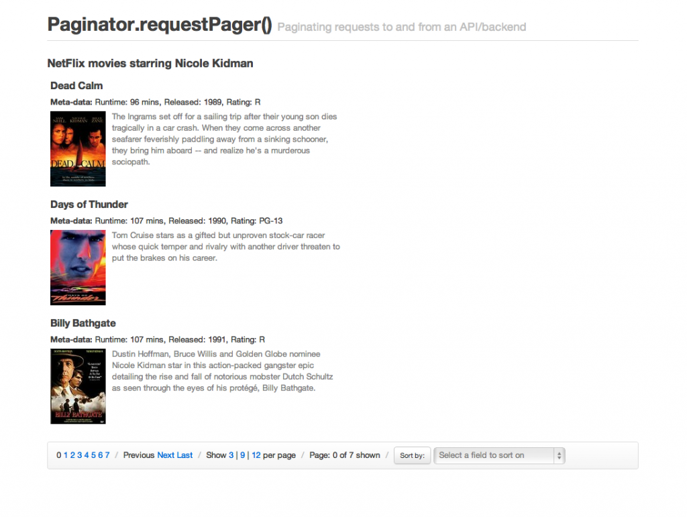
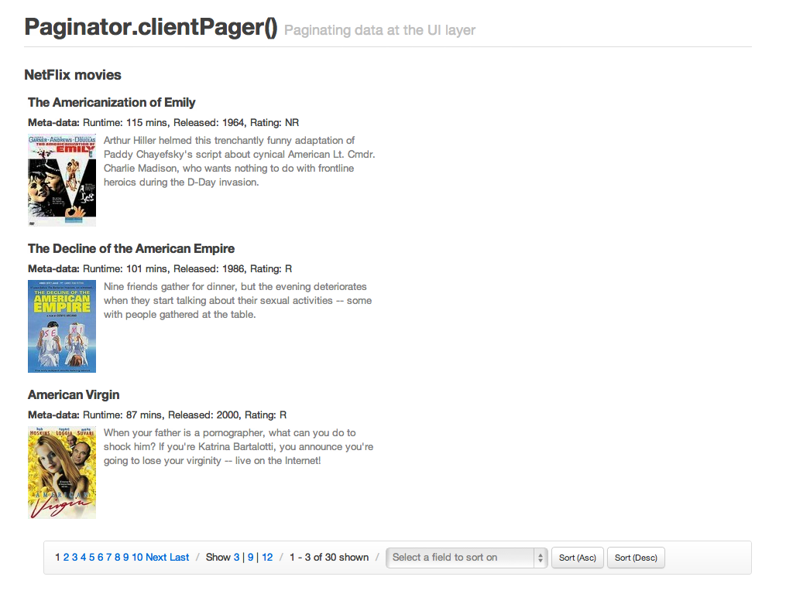
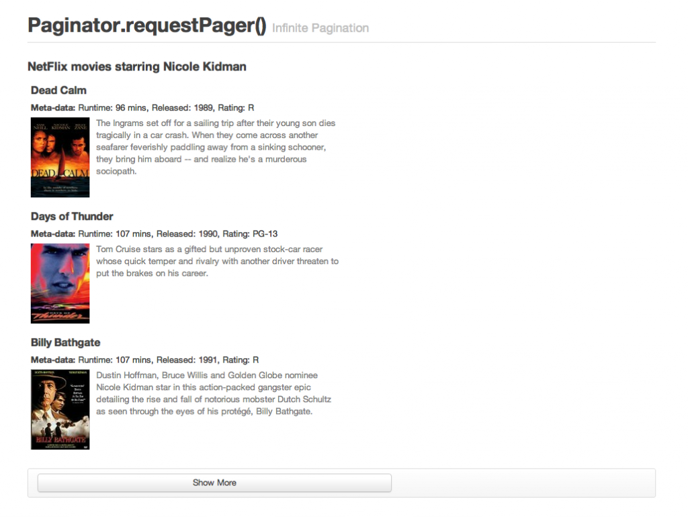

Welcome to my (in-progress) book about the Backbone.js framework for structuring JavaScript applications. It's released under a Creative Commons Attribution-NonCommercial-ShareAlike 3.0 Unported license meaning you can both grab a copy of the book for free or help to further improve it.
I'm very pleased to announce that this book will be out in physical form in a few months time via O'Reilly Media. Readers will have the option of purchasing the latest version in either print or a number of digital formats then or can grab a recent version from this repository.
Corrections to existing material are always welcome and I hope that together we can provide the community with an up-to-date resource that is of help. My extended thanks go out to Jeremy Ashkenas for creating Backbone.js and these members of the community for their assistance tweaking this project.
I hope you find this book helpful!
As JavaScript developers, we are at an interesting point in time where not only do we have mature solutions to help organize the JavaScript powering our applications based on a separation of concerns, but developers looking to build non-trivial projects are almost spoiled for choice for frameworks that can help structure their applications.
Maturity in software (framework) development isn't simply about how long a framework has been around. It's about how solid the framework is and more importantly how well it's evolved to fill its role. Has it become more effective at solving common problems? Does it continue to improve as developers build larger and more complex applications with it?
In this book, I will be covering the popular Backbone.js, which I consider the best of the current family of JavaScript architectural frameworks.
Topics will include MVC theory and how to build applications using Backbone's models, views, collections and routers. I'll also be taking you through advanced topics like modular development with Backbone.js and AMD (via RequireJS), how to build applications using modern software stacks (like Node and Express), how to solve the routing problems with Backbone and jQuery Mobile, tips about scaffolding tools, and a lot more.
If this is your first time looking at Backbone.js and you're still unsure whether or not to give it a try, why not take a look at how a Todo application can be implemented in Backbone and several other popular Javascript frameworks before reading further?
The goal of this book is to create an authoritative and centralized repository of information that can help those developing real-world apps with Backbone. If you come across a section or topic which you think could be improved or expanded on, please feel free to submit a pull-request. It won't take long and you'll be helping other developers avoid problems you've run into before.
In this section we are going to cover the context into which a framework like Backbone.js fits. Let's begin our journey into understanding Backbone better with a look at code architecture.
Before exploring any JavaScript frameworks that assist in structuring applications, it can be useful to gain a basic understanding of architectural design patterns. Design patterns are proven solutions to common development problems and can suggest structural approaches to help guide developers in adding some organization to their applications.
Patterns are useful because they're a set of practices that build upon the collective experience of skilled developers who have repeatedly solved similar problems. Although developers 10 or 20 years ago may not have been using the same programming languages when implementing patterns in their projects, there are many lessons we can learn from their efforts.
In this section, we're going to review two popular patterns - MVC and MVP. We'll be exploring in greater detail how Backbone.js implements these patterns shortly to better appreciate where it fits in.
MVC (Model-View-Controller) is an architectural design pattern that encourages improved application organization through a separation of concerns. It enforces the isolation of business data (Models) from user interfaces (Views), with a third component (Controllers) traditionally present to manage logic, user-input and the coordination of models and views. The pattern was originally designed by Trygve Reenskaug while working on Smalltalk-80 (1979), where it was initially called Model-View-Controller-Editor. MVC was described in depth in “Design Patterns: Elements of Reusable Object-Oriented Software” (The "GoF" or “Gang of Four” book) in 1994, which played a role in popularizing its use.
It's important to understand what the original MVC pattern was aiming to solve as it has changed quite heavily since the days of its origin. Back in the 70's, graphical user-interfaces were far and few between. An approach known as Separated Presentation began to be used as a means to make a clear division between domain objects which modeled concepts in the real world (e.g a photo, a person) and the presentation objects which were rendered to the user's screen.
The Smalltalk-80 implementation of MVC took this concept further and had an objective of separating out the application logic from the user interface. The idea was that decoupling these parts of the application would also allow the reuse of models for other interfaces in the application. There are some interesting points worth noting about Smalltalk-80's MVC architecture:
Developers are sometimes surprised when they learn that the Observer pattern (nowadays commonly implemented as a Publish/Subscribe system) was included as a part of MVC's architecture decades ago. In Smalltalk-80's MVC, the View and Controller both observe the Model: anytime the Model changes, the Views react. A simple example of this is an application backed by stock market data - for the application to show real-time information, any change to the data in its Models should result in the View being refreshed instantly.
Martin Fowler has done an excellent job of writing about the origins of MVC over the years and if you are interested in further historical information about Smalltalk-80's MVC, I recommend reading his work.
We've reviewed the 70's, but let us now return to the here and now. The MVC pattern has been applied to a diverse range of programming languages. For example, the popular Ruby on Rails is an implementation of a web application framework based on MVC for the Ruby language. JavaScript now has a number of MVC frameworks, including Ember.js, JavaScriptMVC, and of course Backbone.js. Given the importance of avoiding "spaghetti" code, a term which describes code that is very difficult to read or maintain due to its lack of structure, let's look at what the MVC pattern enables the Javascript developer to do.
MVC is composed of three core components:
Models manage the data for an application. They are concerned with neither the user-interface nor presentation layers, but instead represent structured data that an application may require. When a model changes (e.g when it is updated), it will typically notify its observers (e.g views, a concept we will cover shortly) that a change has occurred so that they may react accordingly.
To understand models better, let us imagine we have a JavaScript photo gallery application. In a photo gallery, a photo would merit its own model, as it represents a unique kind of domain-specific data. The Photo model may represent attributes such as a caption, image source and additional meta-data. A specific photo would be stored in an instance of a model. Here's an example of a simple Photo model implemented with Backbone.js:
var Photo = Backbone.Model.extend({
// Default attributes for the photo
defaults: {
// Ensure that each photo created has an `src`.
src: "placeholder.jpg",
caption: "A default image",
viewed: false
},
initialize: function() {
}
});The built-in capabilities of models vary across frameworks, however it's common for them to support validation of attributes, where attributes represent the properties of the model, such as a model identifier. When using models in real-world applications we generally also need a way of persisting models. Persistence allows us to edit and update models with the knowledge that their most recent states will be saved somewhere, for example in a web browser's localStorage data-store or synchronized with a database.
A model may also have multiple views observing it. Imagine our Photo model contained meta-data such as the longitude and latitude where the photo was taken, a list of people present in the photo, and a list of tags. A developer could create a single view that displayed all these attributes, or might create three separate views to display each attribute. The important detail is that the Photo model doesn't care how these views are organized, it simply announces updates to its data as necessary. We'll come back to Views in more detail later.
It is not uncommon for modern MVC/MV* frameworks to provide a means to group models together. In Backbone, these groups are called "Collections". Managing models in groups allows us to write application logic based on notifications from the group, should any model it contains change. This avoids the need to manually observe individual model instances.
Here's how we might group Photo models into a simplified Backbone Collection:
var PhotoGallery = Backbone.Collection.extend({
// Reference to this collection's model.
model: Photo,
// Filter down the list of all photos that have been viewed
viewed: function() {
return this.filter(function(photo){ return photo.get('viewed'); });
},
// Filter down the list to only photos that have not yet been viewed
unviewed: function() {
return this.without.apply(this, this.viewed());
}
});If you read older texts on MVC, you may come across a description of models as also managing application 'state'. In JavaScript applications "state" has a specific meaning, typically referring to the current "state" of a view or sub-view on a user's screen at a fixed time. State is a topic which is regularly discussed when looking at Single-page applications, where the concept of state needs to be simulated.
Views are a visual representation of models that present a filtered view of their current state. A view typically observes a model and is notified when the model changes, allowing the view to update itself accordingly. Design pattern literature commonly refers to views as 'dumb', given that their knowledge of models and controllers in an application is limited.
Users interact with views, which usually means reading and editing model data. For example, in our photo gallery application example, model viewing might happen in a user interface with a big image, a caption, and a list of tags. Model editing could be done through an "edit" view where a user who has selected a specific photo could edit its caption, tags, or other metadata in a form.
In MVC, the actual task of updating the Model falls to Controllers, which we'll be covering shortly.
Let's explore Views a little further using a simple JavaScript example. Below we can see a function that creates a single Photo view, consuming both a model instance and a controller instance.
We define a render() utility within our view which is responsible for rendering the contents of the photoModel using a JavaScript templating engine (Underscore templating) and updating the contents of our view, referenced by photoEl.
The photoModel then adds our render() callback as one of its subscribers, so that through the Observer pattern it can trigger the view to update when the model changes.
You may wonder where user interaction comes into play here. When users click on any elements within the view, it's not the view's responsibility to know what to do next. A Controller makes this decision. In our sample implementation, this is achieved by adding an event listener to photoEl which will delegate handling the click behavior back to the controller, passing the model information along with it in case it's needed.
The benefit of this architecture is that each component plays its own separate role in making the application function as needed.
var buildPhotoView = function( photoModel, photoController ){
var base = document.createElement('div'),
photoEl = document.createElement('div');
base.appendChild(photoEl);
var render= function(){
// We use a templating library such as Underscore
// templating which generates the HTML for our
// photo entry
photoEl.innerHTML = _.template('photoTemplate', {src: photoModel.getSrc()});
}
photoModel.addSubscriber( render );
photoEl.addEventListener('click', function(){
photoController.handleEvent('click', photoModel );
});
var show = function(){
photoEl.style.display = '';
}
var hide = function(){
photoEl.style.display = 'none';
}
return{
showView: show,
hideView: hide
}
}Templating
In the context of JavaScript frameworks that support MVC/MV*, it is worth looking more closely at JavaScript templating and its relationship to Views.
It has long been considered bad practice (and computationally expensive) to manually create large blocks of HTML markup in-memory through string concatenation. Developers using this technique often find themselves iterating through their data, wrapping it in nested divs and using outdated techniques such as document.write to inject the 'template' into the DOM. This approach often means keeping scripted markup inline with standard markup, which can quickly become difficult to read and maintain, especially when building large applications.
JavaScript templating libraries (such as Handlebars.js or Mustache) are often used to define templates for views as HTML markup containing template variables. These template blocks can be either stored externally or within script tags with a custom type (e.g 'text/template'). Variables are deliminated using a variable syntax (e.g {{name}}). Javascript template libraries typically accept data in JSON, and the grunt work of populating templates with data is taken care of by the framework itself. This has a several benefits, particularly when opting to store templates externally as this can let applications load templates dynamically on an as-needed basis.
Let's compare two examples of HTML templates. One is implemented using the popular Handlebars.js library, and the other uses Underscore's 'microtemplates'.
Handlebars.js:
<li class="photo">
<h2>{{caption}}</h2>
<img class="source" src="{{src}}"/>
<div class="meta-data">
{{metadata}}
</div>
</li>Underscore.js Microtemplates:
<li class="photo">
<h2><%= caption %></h2>
<img class="source" src="<%= src %>"/>
<div class="meta-data">
<%= metadata %>
</div>
</li>You may also use double curly brackets (i.e {{}}) (or any other tag you feel comfortable with) in Microtemplates. In the case of curly brackets, this can be done by setting the Underscore templateSettings attribute as follows:
_.templateSettings = { interpolate : /\{\{(.+?)\}\}/g };A note on navigation and state
It is also worth noting that in classical web development, navigating between independent views required the use of a page refresh. In single-page JavaScript applications, however, once data is fetched from a server via Ajax, it can be dynamically rendered in a new view within the same page. Since this doesn't automatically update the URL, the role of navigation thus falls to a "router", which assists in managing application state (e.g allowing users to bookmark a particular view they have navigated to). As routers are however neither a part of MVC nor present in every MVC-like framework, I will not be going into them in greater detail in this section.
Controllers are an intermediary between models and views which are classically responsible for two tasks: they both update the view when the model changes and update the model when the user manipulates the view.
In our photo gallery application, a controller would be responsible for handling changes the user made to the edit view for a particular photo, updating a specific photo model when a user has finished editing.
It's with controllers that most JavaScript MVC frameworks depart from this interpretation of the MVC pattern. The reasons for this vary, but in my opinion, Javascript framework authors likely initially looked at server-side interpretations of MVC (such as Ruby on Rails), realized that that approach didn't translate 1:1 on the client-side, and so re-interpreted the C in MVC to solve their state management problem. This was a clever approach, but it can make it hard for developers coming to MVC for the first time to understand both the classical MVC pattern and the "proper" role of controllers in other non-Javascript frameworks.
So does Backbone.js have Controllers? Not really. Backbone's Views typically contain "controller" logic, and Routers (discussed below) are used to help manage application state, but neither are true Controllers according to classical MVC.
In this respect, contrary to what might be mentioned in the official documentation or in blog posts, Backbone is neither a truly MVC/MVP nor MVVM framework. It's in fact better to see it a member of the MV* family which approaches architecture in its own way. There is of course nothing wrong with this, but it is important to distinguish between classical MVC and MV* should you be relying on discussions of MVC to help with your Backbone projects.
Spine.js
We now know that controllers are traditionally responsible for updating the view when the model changes (and similarly the model when the user updates the view). Since Backbone doesn't have its own explicit controllers, it's useful to review the controller from another MVC framework to appreciate the difference in implementations. Let's take a look at Spine.js:
In this example, we're going to have a controller called PhotosController which will be in charge of individual photos in the application. It will ensure that when the view updates (e.g a user edited the photo meta-data) the corresponding model does too.
(Note: We won't be delving heavily into Spine.js beyond this example, but it's worth looking at it to learn more about Javascript frameworks in general.)
// Controllers in Spine are created by inheriting from Spine.Controller
var PhotosController = Spine.Controller.sub({
init: function(){
this.item.bind("update", this.proxy(this.render));
this.item.bind("destroy", this.proxy(this.remove));
},
render: function(){
// Handle templating
this.replace($("#photoTemplate").tmpl(this.item));
return this;
},
remove: function(){
this.el.remove();
this.release();
}
});In Spine, controllers are considered the glue for an application, adding and responding to DOM events, rendering templates and ensuring that views and models are kept in sync (which makes sense in the context of what we know to be a controller).
What we're doing in the above example is setting up listeners in the update and destroy events using render() and remove(). When a photo entry gets updated, we re-render the view to reflect the changes to the meta-data. Similarly, if the photo gets deleted from the gallery, we remove it from the view. In case you were wondering about the tmpl() function in the code snippet: in the render() function, we're using this to render a JavaScript template called #photoTemplate which simply returns a HTML string used to replace the controller's current element.
What this provides us with is a very lightweight, simple way to manage changes between the model and the view.
Backbone.js
Later on in this section we're going to revisit the differences between Backbone and traditional MVC, but for now let's focus on controllers.
In Backbone, controller logic is shared between Backbone.View and Backbone.Router. Earlier releases of Backbone contained something called Backbone.Controller, but it was renamed to Router to clarify its role.
A Router's main purpose is to translate URL requests into application states. When a user browses to the URL www.example.com/photos/42, a Router could be used to show the photo with that ID, and to define what application behavior should be run in response to that request. Routers can contain traditional controller responsibilities, such as binding the events between models and views, or rendering parts of the page. However, Backbone contributor Tim Branyen has pointed out that it's possible to get away without needing Backbone.Router at all for this, so a way to think about it using the Router paradigm is probably:
var PhotoRouter = Backbone.Router.extend({
routes: { "photos/:id": "route" },
route: function(id) {
var item = photoCollection.get(id);
var view = new PhotoView({ model: item });
something.html( view.render().el );
}
}):To summarize, the separation of concerns in MVC facilitates modularization of an application's functionality and enables:
Right now, you likely have a basic understanding of what the MVC pattern provides, but for the curious, we'll explore it a little further.
The GoF (Gang of Four) do not refer to MVC as a design pattern, but rather consider it a "set of classes to build a user interface". In their view, it's actually a variation of three other classical design patterns: the Observer (Pub/Sub), Strategy and Composite patterns. Depending on how MVC has been implemented in a framework, it may also use the Factory and Decorator patterns. I've covered some of these patterns in my other free book, JavaScript Design Patterns For Beginners if you would like to read into them further.
As we've discussed, models represent application data, while views handle what the user is presented on screen. As such, MVC relies on Pub/Sub for some of its core communication (something that surprisingly isn't covered in many articles about the MVC pattern). When a model is changed it "publishes" to the rest of the application that it has been updated. The "subscriber"--generally a Controller--then updates the view accordingly. The observer-viewer nature of this relationship is what facilitates multiple views being attached to the same model.
For developers interested in knowing more about the decoupled nature of MVC (once again, depending on the implementation), one of the goals of the pattern is to help define one-to-many relationships between a topic and its observers. When a topic changes, its observers are updated. Views and controllers have a slightly different relationship. Controllers facilitate views to respond to different user input and are an example of the Strategy pattern.
Having reviewed the classical MVC pattern, your should now understand how it allows developers to cleanly separate concerns in an application. You should also now appreciate how JavaScript MVC frameworks may differ in their interpretation of MVC, and how they share some of the fundamental concepts of the original pattern.
When reviewing a new JavaScript MVC/MV* framework, remember - it can be useful to step back and consider how it's opted to approach Models, Views, Controllers or other alternatives, as this can better help you grok how the framework expects to be used.
Model-view-presenter (MVP) is a derivative of the MVC design pattern which focuses on improving presentation logic. It originated at a company named Taligent in the early 1990s while they were working on a model for a C++ CommonPoint environment. Whilst both MVC and MVP target the separation of concerns across multiple components, there are some fundamental differences between them.
For the purposes of this summary we will focus on the version of MVP most suitable for web-based architectures.
The P in MVP stands for presenter. It's a component which contains the user-interface business logic for the view. Unlike MVC, invocations from the view are delegated to the presenter, which are decoupled from the view and instead talk to it through an interface. This allows for all kinds of useful things such as being able to mock views in unit tests.
The most common implementation of MVP is one which uses a Passive View (a view which is for all intents and purposes "dumb"), containing little to no logic. MVP models are almost identical to MVC models and handle application data. The presenter acts as a mediator which talks to both the view and model, however both of these are isolated from each other. They effectively bind models to views, a responsibility held by Controllers in MVC. Presenters are at the heart of the MVP pattern and as you can guess, incorporate the presentation logic behind views.
Solicited by a view, presenters perform any work to do with user requests and pass data back to them. In this respect, they retrieve data, manipulate it and determine how the data should be displayed in the view. In some implementations, the presenter also interacts with a service layer to persist data (models). Models may trigger events but it's the presenter's role to subscribe to them so that it can update the view. In this passive architecture, we have no concept of direct data binding. Views expose setters which presenters can use to set data.
The benefit of this change from MVC is that it increases the testability of your application and provides a more clean separation between the view and the model. This isn't however without its costs as the lack of data binding support in the pattern can often mean having to take care of this task separately.
Although a common implementation of a Passive View is for the view to implement an interface, there are variations on it, including the use of events which can decouple the View from the Presenter a little more. As we don't have the interface construct in JavaScript, we're using it more as more a protocol than an explicit interface here. It's technically still an API and it's probably fair for us to refer to it as an interface from that perspective.
There is also a Supervising Controller variation of MVP, which is closer to the MVC and MVVM patterns as it provides data-binding from the Model directly from the View. Key-value observing (KVO) plugins (such as Derick Bailey's Backbone.ModelBinding plugin) introduce this idea of a Supervising Controller to Backbone.
MVP is generally used most often in enterprise-level applications where it's necessary to reuse as much presentation logic as possible. Applications with very complex views and a great deal of user interaction may find that MVC doesn't quite fit the bill here as solving this problem may mean heavily relying on multiple controllers. In MVP, all of this complex logic can be encapsulated in a presenter, which can simplify maintenance greatly.
As MVP views are defined through an interface and the interface is technically the only point of contact between the system and the view (other than a presenter), this pattern also allows developers to write presentation logic without needing to wait for designers to produce layouts and graphics for the application.
Depending on the implementation, MVP may be more easy to automatically unit test than MVC. The reason often cited for this is that the presenter can be used as a complete mock of the user-interface and so it can be unit tested independent of other components. In my experience this really depends on the languages you are implementing MVP in (there's quite a difference between opting for MVP for a JavaScript project over one for say, ASP.net).
At the end of the day, the underlying concerns you may have with MVC will likely hold true for MVP given that the differences between them are mainly semantic. As long as you are cleanly separating concerns into models, views and controllers (or presenters) you should be achieving most of the same benefits regardless of the pattern you opt for.
There are very few, if any architectural JavaScript frameworks that claim to implement the MVC or MVP patterns in their classical form as many JavaScript developers don't view MVC and MVP as being mutually exclusive (we are actually more likely to see MVP strictly implemented when looking at web frameworks such as ASP.net or GWT). This is because it's possible to have additional presenter/view logic in your application and yet still consider it a flavor of MVC.
Backbone contributor Irene Ros subscribes to this way of thinking as when she separates Backbone views out into their own distinct components, she needs something to actually assemble them for her. This could either be a controller route (such as a Backbone.Router, covered later in the book) or a callback in response to data being fetched.
That said, some developers do however feel that Backbone.js better fits the description of MVP than it does MVC . Their view is that:
Backbone.View (the layer between View templates and the data bound to it) than a controller doesBackbone.Model (it isn't that different from the classical MVC "Model")A response to this could be that the view can also just be a View (as per MVC) because Backbone is flexible enough to let it be used for multiple purposes. The V in MVC and the P in MVP can both be accomplished by Backbone.View because they're able to achieve two purposes: both rendering atomic components and assembling those components rendered by other views.
We've also seen that in Backbone the responsibility of a controller is shared with both the Backbone.View and Backbone.Router and in the following example we can actually see that aspects of that are certainly true.
Here, our Backbone PhotoView uses the Observer pattern to 'subscribe' to changes to a View's model in the line this.model.bind('change',...). It also handles templating in the render() method, but unlike some other implementations, user interaction is also handled in the View (see events).
var PhotoView = Backbone.View.extend({
//... is a list tag.
tagName: "li",
// Pass the contents of the photo template through a templating
// function, cache it for a single photo
template: _.template($('#photo-template').html()),
// The DOM events specific to an item.
events: {
"click img" : "toggleViewed"
},
// The PhotoView listens for changes to its model, re-rendering. Since there's
// a one-to-one correspondence between a **Photo** and a **PhotoView** in this
// app, we set a direct reference on the model for convenience.
initialize: function() {
_.bindAll(this, 'render');
this.model.bind('change', this.render);
this.model.bind('destroy', this.remove);
},
// Re-render the photo entry
render: function() {
$(this.el).html(this.template(this.model.toJSON()));
return this;
},
// Toggle the `"viewed"` state of the model.
toggleViewed: function() {
this.model.viewed();
}
});Another (quite different) opinion is that Backbone more closely resembles Smalltalk-80 MVC, which we went through earlier.
As regular Backbone user Derick Bailey has written, it's ultimately best not to force Backbone to fit any specific design patterns. Design patterns should be considered flexible guides to how applications may be structured and in this respect, Backbone doesn't fit either MVC nor MVP perfectly. Instead, it borrows some of the best concepts from multiple architectural patterns and creates a flexible framework that just works well. Call it the Backbone way, MV* or whatever helps reference its flavor of application architecture.
It is however worth understanding where and why these concepts originated, so I hope that my explanations of MVC and MVP have been of help. Most structural JavaScript frameworks will adopt their own take on classical patterns, either intentionally or by accident, but the important thing is that they help us develop applications which are organized, clean and can be easily maintained.
new keyword, which some developers preferBackbone.js is one of a number of JavaScript frameworks for creating MVC-like web applications. On the front-end, it's my architectural framework of choice as it's both mature, relatively lightweight and can be easily tested using third-party toolkits such as Jasmine or QUnit. Other MVC frameworks you may be familiar with include Ember.js (SproutCore 2.0), Spine, YUILibrary and JavaScriptMVC.
Backbone is maintained by a number of contributors, most notably: Jeremy Ashkenas, creator of CoffeeScript, Docco and Underscore.js. As Jeremy is a believer in detailed documentation, there's a level of comfort in knowing you're unlikely to run into issues which are either not explained in the official docs or which can't be nailed down with some assistance from the #documentcloud IRC channel. I strongly recommend using the latter if you find yourself getting stuck.
Backbone's main benefits, regardless of your target platform or device, include helping:
In this section, you'll learn the essentials of Backbone's models, views, collections and routers, as well as about using namespacing to organize your code. This isn't meant as a replacement for the official documentation, but it will help you understand many of the core concepts behind Backbone before you start building applications with it.
Backbone models contain interactive data for an application as well as the logic around this data. For example, we can use a model to represent the concept of a photo object including its attributes like tags, titles and a location.
Models can be created by extending Backbone.Model as follows:
var Photo = Backbone.Model.extend({
defaults: {
src: 'placeholder.jpg',
title: 'an image placeholder',
coordinates: [0,0]
},
initialize: function(){
this.bind("change:src", function(){
var src = this.get("src");
console.log('Image source updated to ' + src);
});
},
changeSrc: function( source ){
this.set({ src: source });
}
});
var somePhoto = new Photo({ src: "test.jpg", title:"testing"});
somePhoto.changeSrc("magic.jpg"); // which triggers "change:src" and logs an update message to the console.The initialize() method is called when a new instance of a model is created. Its use is optional, however you'll see why it's good practice to use it below.
var Photo = Backbone.Model.extend({
initialize: function(){
console.log('this model has been initialized');
}
});
// We can then create our own instance of a photo as follows:
var myPhoto = new Photo();Model.get()
Model.get() provides easy access to a model's attributes. Attributes which are passed through to the model on instantiation are instantly available for retrieval.
var myPhoto = new Photo({ title: "My awesome photo",
src:"boston.jpg",
location: "Boston",
tags:['the big game', 'vacation']}),
title = myPhoto.get("title"), //My awesome photo
location = myPhoto.get("location"), //Boston
tags = myPhoto.get("tags"), // ['the big game','vacation']
photoSrc = myPhoto.get("src"); //boston.jpgAlternatively, if you wish to directly access all of the attributes in a model's instance directly, you can achieve this as follows:
var myAttributes = myPhoto.attributes;
console.log(myAttributes);It is best practice to use Model.set() or direct instantiation to set the values of a model's attributes.
Accessing Model.attributes directly is generally discouraged. Instead, should you need to read or clone data, Model.toJSON() is recommended for this purpose. If you would like to access or copy a model's attributes for purposes such as JSON stringification (e.g. for serialization prior to being passed to a view), this can be achieved using Model.toJSON():
var myAttributes = myPhoto.toJSON();
console.log(myAttributes);
/* this returns { title: "My awesome photo",
src:"boston.jpg",
location: "Boston",
tags:['the big game', 'vacation']}*/Model.set() allows us to pass attributes into an instance of our model. Attributes can either be set during initialization or at any time afterwards. It's important to avoid trying to set a Model's attributes directly (for example Model.caption = 'A new caption'). Backbone uses Model.set() to know when to broadcast that a model's data has changed.
var Photo = Backbone.Model.extend({
initialize: function(){
console.log('this model has been initialized');
}
});
// Setting the value of attributes via instantiation
var myPhoto = new Photo({ title: 'My awesome photo', location: 'Boston' });
var myPhoto2 = new Photo();
// Setting the value of attributes through Model.set()
myPhoto2.set({ title:'Vacation in Florida', location: 'Florida' });Default values
There are times when you want your model to have a set of default values (e.g. in a scenario where a complete set of data isn't provided by the user). This can be set using a property called defaults in your model.
var Photo = Backbone.Model.extend({
defaults:{
title: 'Another photo!',
tags: ['untagged'],
location: 'home',
src: 'placeholder.jpg'
},
initialize: function(){
}
});
var myPhoto = new Photo({ location: "Boston",
tags:['the big game', 'vacation']}),
title = myPhoto.get("title"), //Another photo!
location = myPhoto.get("location"), //Boston
tags = myPhoto.get("tags"), // ['the big game','vacation']
photoSrc = myPhoto.get("src"); //placeholder.jpgListening for changes to your model
Any and all of the attributes in a Backbone model can have listeners bound to them which detect when their values change. Listeners can be added to the initialize() function:
this.bind('change', function(){
console.log('values for this model have changed');
});In the following example, we log a message whenever a specific attribute (the title of our Photo model) is altered.
var Photo = Backbone.Model.extend({
defaults:{
title: 'Another photo!',
tags: ['untagged'],
location: 'home',
src: 'placeholder.jpg'
},
initialize: function(){
console.log('this model has been initialized');
this.bind("change:title", function(){
var title = this.get("title");
console.log("My title has been changed to.. " + title);
});
},
setTitle: function(newTitle){
this.set({ title: newTitle });
}
});
var myPhoto = new Photo({ title:"Fishing at the lake", src:"fishing.jpg"});
myPhoto.setTitle('Fishing at sea');
//logs 'My title has been changed to.. Fishing at sea'Validation
Backbone supports model validation through Model.validate(), which allows checking the attribute values for a model prior to them being set.
Validation functions can be as simple or complex as necessary. If the attributes provided are valid, nothing should be returned from .validate(). If they are invalid, a custom error can be returned instead.
A basic example for validation can be seen below:
var Photo = Backbone.Model.extend({
validate: function(attribs){
if(attribs.src === undefined){
return "Remember to set a source for your image!";
}
},
initialize: function(){
console.log('this model has been initialized');
this.bind("error", function(model, error){
console.log(error);
});
}
});
var myPhoto = new Photo();
myPhoto.set({ title: "On the beach" });
//logs Remember to set a source for your image!Views in Backbone don't contain the markup for your application, but rather they are there to support models by defining the logic for how they should be represented to the user. This is usually achieved using JavaScript templating (e.g. Mustache, jQuery-tmpl, etc.). A view's render() function can be bound to a model's change() event, allowing the view to always be up to date without requiring a full page refresh.
Similar to the previous sections, creating a new view is relatively straight-forward. To create a new View, simply extend Backbone.View. I'll explain this code in detail below:
var PhotoSearch = Backbone.View.extend({
el: $('#results'),
render: function( event ){
var compiled_template = _.template( $("#results-template").html() );
this.el.html( compiled_template(this.model.toJSON()) );
return this; //recommended as this enables calls to be chained.
},
events: {
"submit #searchForm": "search",
"click .reset": "reset",
"click .advanced": "switchContext"
},
search: function( event ){
//executed when a form '#searchForm' has been submitted
},
reset: function( event ){
//executed when an element with class "reset" has been clicked.
},
switchContext: function( event ){
//executed when an element with class "advanced" has been clicked.
}
});el?el is basically a reference to a DOM element and all views must have one. It allows for all of the contents of a view to be inserted into the DOM at once, which makes for faster rendering as browser performs the minimum required reflows and repaints.
There are two ways to attach a DOM element to a view: the element already exists in the page or a new element is created for the view and added manually by the developer. If the element already exists in the page, you can set el as either a CSS selector that matches the element or a simple reference to the DOM element.
el: '#footer',
// OR
el: document.getElementById( 'footer' )If you want to create a new element for you view, set any combination of the following view's properties: tagName, id and className. A new element will be created for you by the framework and a reference to it will be available at the el property.
tagName: 'p', // required, but defaults to 'div' if not set
className: 'container', // optional, you can assign multiple classes to this property like so 'container homepage'
id: 'header', // optionalThe above code creates the DOMElement below but doesn't append it to the DOM.
<p id="header" class="container"></p>Understanding render()
render() is an optional function that defines the logic for rendering a template. We'll use Underscore's micro-templating in these examples, but remember you can use other templating frameworks if you prefer.
The _.template method in Underscore compiles JavaScript templates into functions which can be evaluated for rendering. In the above view, I'm passing the markup from a template with id results-template to _.template() to be compiled. Next, I set the html of the el DOM element to the output of processing a JSON version of the model associated with the view through the compiled template.
Presto! This populates the template, giving you a data-complete set of markup in just a few short lines of code.
The events attribute
The Backbone events attribute allows us to attach event listeners to either custom selectors, or directly to el if no selector is provided. An event takes the form {"eventName selector": "callbackFunction"} and a number of event-types are supported, including click, submit, mouseover, dblclick and more.
What isn't instantly obvious is that under the bonnet, Backbone uses jQuery's .delegate() to provide instant support for event delegation but goes a little further, extending it so that this always refers to the current view object. The only thing to really keep in mind is that any string callback supplied to the events attribute must have a corresponding function with the same name within the scope of your view.
Collections are sets of Models and are created by extending Backbone.Collection.
Normally, when creating a collection you'll also want to pass through a property specifying the model that your collection will contain, as well as any instance properties required.
In the following example, we create a PhotoCollection that will contain our Photo models:
var PhotoCollection = Backbone.Collection.extend({
model: Photo
});Getters and Setters
There are a few different ways to retrieve a model from a collection. The most straight-forward is to use Collection.get() which accepts a single id as follows:
var skiingEpicness = PhotoCollection.get(2);Sometimes you may also want to get a model based on its client id. The client id is a property that Backbone automatically assigns models that have not yet been saved. You can get a model's client id from its .cid property.
var mySkiingCrash = PhotoCollection.getByCid(456);Backbone Collections don't have setters as such, but do support adding new models via .add() and removing models via .remove().
var a = new Backbone.Model({ title: 'my vacation'}),
b = new Backbone.Model({ title: 'my holiday'});
var photoCollection = new PhotoCollection([a,b]);
photoCollection.remove([a,b]);Listening for events
As collections represent a group of items, we're also able to listen for add and remove events for when new models are added or removed from the collection. Here's an example:
var PhotoCollection = new Backbone.Collection();
PhotoCollection.bind("add", function(photo) {
console.log("I liked " + photo.get("title") + ' its this one, right? ' + photo.get("src"));
});
PhotoCollection.add([
{title: "My trip to Bali", src: "bali-trip.jpg"},
{title: "The flight home", src: "long-flight-oofta.jpg"},
{title: "Uploading pix", src: "too-many-pics.jpg"}
]);In addition, we're able to bind a change event to listen for changes to models in the collection.
PhotoCollection.bind("change:title", function(){
console.log('there have been updates made to this collections titles');
});Fetching models from the server
Collections.fetch() retrieves a default set of models from the server in the form of a JSON array. When this data returns, the current collection's contents will be replaced with the contents of the array.
var PhotoCollection = new Backbone.Collection;
PhotoCollection.url = '/photos';
PhotoCollection.fetch();Under the covers, Backbone.sync is the function called every time Backbone tries to read or save models to the server. It uses jQuery or Zepto's ajax implementations to make these RESTful requests, however this can be overridden as per your needs.
In the above example if we wanted to log an event when .sync() was called, we could do this:
Backbone.sync = function(method, model) {
console.log("I've been passed " + method + " with " + JSON.stringify(model));
};Resetting/Refreshing Collections
Rather than adding or removing models individually, you might occasionally wish to update an entire collection at once. Collection.reset() allows us to replace an entire collection with new models as follows:
PhotoCollection.reset([
{title: "My trip to Scotland", src: "scotland-trip.jpg"},
{title: "The flight from Scotland", src: "long-flight.jpg"},
{title: "Latest snap of lock-ness", src: "lockness.jpg"}]);As Backbone requires Underscore as a hard dependency, we're able to use many of the utilities it has to offer to aid with our application development. Here's an example of how Underscore's sortBy() method can be used to sort a collection of photos based on a particular attribute.
var sortedByAlphabet = PhotoCollection.sortBy(function (photo) {
return photo.get("title").toLowerCase();
});The complete list of what Underscore can do is beyond the scope of this guide, but can be found in its official docs.
In Backbone, routers are used to help manage application state and for connecting URLs to application events. This is achieved using hash-tags with URL fragments, or using the browser's pushState and History API. Some examples of routes may be seen below:
http://unicorns.com/#whatsup
http://unicorns.com/#search/seasonal-horns/page2Note: An application will usually have at least one route mapping a URL route to a function that determines what happens when a user reaches that particular route. This relationship is defined as follows:
"route" : "mappedFunction"Let us now define our first controller by extending Backbone.Router. For the purposes of this guide, we're going to continue pretending we're creating a photo gallery application that requires a GalleryRouter.
Note the inline comments in the code example below as they continue the rest of the lesson on routers.
var GalleryRouter = Backbone.Router.extend({
/* define the route and function maps for this router */
routes: {
"about" : "showAbout",
/*Sample usage: http://unicorns.com/#about*/
"photos/:id" : "getPhoto",
/*This is an example of using a ":param" variable which allows us to match
any of the components between two URL slashes*/
/*Sample usage: http://unicorns.com/#photos/5*/
"search/:query" : "searchPhotos"
/*We can also define multiple routes that are bound to the same map function,
in this case searchPhotos(). Note below how we're optionally passing in a
reference to a page number if one is supplied*/
/*Sample usage: http://unicorns.com/#search/lolcats*/
"search/:query/p:page" : "searchPhotos",
/*As we can see, URLs may contain as many ":param"s as we wish*/
/*Sample usage: http://unicorns.com/#search/lolcats/p1*/
"photos/:id/download/*imagePath" : "downloadPhoto",
/*This is an example of using a *splat. splats are able to match any number of
URL components and can be combined with ":param"s*/
/*Sample usage: http://unicorns.com/#photos/5/download/files/lolcat-car.jpg*/
/*If you wish to use splats for anything beyond default routing, it's probably a good
idea to leave them at the end of a URL otherwise you may need to apply regular
expression parsing on your fragment*/
"*other" : "defaultRoute"
/*This is a default route that also uses a *splat. Consider the
default route a wildcard for URLs that are either not matched or where
the user has incorrectly typed in a route path manually*/
/*Sample usage: http://unicorns.com/#anything*/
},
showAbout: function(){
},
getPhoto: function(id){
/*
Note that the id matched in the above route will be passed to this function
*/
console.log("You are trying to reach photo " + id);
},
searchPhotos: function(query, page){
console.log("Page number: " + page + " of the results for " + query);
},
downloadPhoto: function(id, path){
},
defaultRoute: function(other){
console.log("Invalid. You attempted to reach:" + other);
}
});
/* Now that we have a router setup, remember to instantiate it*/
var myGalleryRouter = new GalleryRouter();As of Backbone 0.5+, it's possible to opt-in for HTML5 pushState support via window.history.pushState. This permits you to define routes such as http://www.scriptjunkie.com/just/an/example. This will be supported with automatic degradation when a user's browser doesn't support pushState. For the purposes of this tutorial, we'll use the hashtag method.
Next, we need to initialize Backbone.history as it handles hashchange events in our application. This will automatically handle routes that have been defined and trigger callbacks when they've been accessed.
The Backbone.history.start() method will simply tell Backbone that it's OK to begin monitoring all hashchange events as follows:
Backbone.history.start();
Router.navigate();As an aside, if you would like to save application state to the URL at a particular point you can use the .navigate() method to achieve this. It simply updates your URL fragment without the need to trigger the hashchange event:
/*Lets imagine we would like a specific fragment for when a user zooms into a photo*/
zoomPhoto: function(factor){
this.zoom(factor); //imagine this zooms into the image
this.navigate("zoom/" + factor); //updates the fragment for us, but doesn't trigger the route
}It is also possible for Router.navigate() to trigger the route as well as updating the URL fragment.
zoomPhoto: function(factor){
this.zoom(factor); //imagine this zooms into the image
this.navigate("zoom/" + factor, true); //updates the fragment for us and triggers the route
}When learning how to use Backbone, an important and commonly overlooked area by tutorials is namespacing. If you already have experience with namespacing in JavaScript, the following section will provide some advice on how to specifically apply concepts you know to Backbone, however I will also be covering explanations for beginners to ensure everyone is on the same page.
The basic idea around namespacing is to avoid collisions with other objects or variables in the global namespace. They're important as it's best to safeguard your code from breaking in the event of another script on the page using the same variable names as you are. As a good 'citizen' of the global namespace, it's also imperative that you do your best to similarly not prevent other developer's scripts executing due to the same issues.
JavaScript doesn't really have built-in support for namespaces like other languages, however it does have closures which can be used to achieve a similar effect.
In this section we'll be taking a look shortly at some examples of how you can namespace your models, views, routers and other components specifically. The patterns we'll be examining are:
Single global variables
One popular pattern for namespacing in JavaScript is opting for a single global variable as your primary object of reference. A skeleton implementation of this where we return an object with functions and properties can be found below:
var myApplication = (function(){
function(){
// ...
},
return {
// ...
}
})();You've probably seen this technique before. A Backbone-specific example might look like this:
var myViews = (function(){
return {
PhotoView: Backbone.View.extend({ .. }),
GalleryView: Backbone.View.extend({ .. }),
AboutView: Backbone.View.extend({ .. });
//etc.
};
})();Here we can return a set of views, but the same technique could return an entire collection of models, views and routers depending on how you decide to structure your application. Although this works for certain situations, the biggest challenge with the single global variable pattern is ensuring that no one else has used the same global variable name as you have in the page.
One solution to this problem, as mentioned by Peter Michaux, is to use prefix namespacing. It's a simple concept at heart, but the idea is you select a common prefix name (in this example, myApplication_) and then define any methods, variables or other objects after the prefix.
var myApplication_photoView = Backbone.View.extend({}),
myApplication_galleryView = Backbone.View.extend({});This is effective from the perspective of trying to lower the chances of a particular variable existing in the global scope, but remember that a uniquely named object can have the same effect. This aside, the biggest issue with the pattern is that it can result in a large number of global objects once your application starts to grow.
For more on Peter's views about the single global variable pattern, read his excellent post on them.
Note: There are several other variations on the single global variable pattern out in the wild, however having reviewed quite a few, I felt the prefixing approach applied best to Backbone.
Object Literals
Object Literals have the advantage of not polluting the global namespace but assist in organizing code and parameters logically. They're beneficial if you wish to create easily readable structures that can be expanded to support deep nesting. Unlike simple global variables, Object Literals often also take into account tests for the existence of a variable by the same name, which helps reduce the chances of collision.
This example demonstrates two ways you can check to see if a namespace already exists before defining it. I commonly use Option 2.
/*Doesn't check for existence of myApplication*/
var myApplication = {};
/*
Does check for existence. If already defined, we use that instance.
Option 1: if(!myApplication) myApplication = {};
Option 2: var myApplication = myApplication || {};
We can then populate our object literal to support models, views and collections (or any data, really):
*/
var myApplication = {
models : {},
views : {
pages : {}
},
collections : {}
};One can also opt for adding properties directly to the namespace (such as your views, in the following example):
var myGalleryViews = myGalleryViews || {};
myGalleryViews.photoView = Backbone.View.extend({});
myGalleryViews.galleryView = Backbone.View.extend({});The benefit of this pattern is that you're able to easily encapsulate all of your models, views, routers etc. in a way that clearly separates them and provides a solid foundation for extending your code.
This pattern has a number of benefits. It's often a good idea to decouple the default configuration for your application into a single area that can be easily modified without the need to search through your entire codebase just to alter it. Here's an example of a hypothetical object literal that stores application configuration settings:
var myConfig = {
language: 'english',
defaults: {
enableGeolocation: true,
enableSharing: false,
maxPhotos: 20
},
theme: {
skin: 'a',
toolbars: {
index: 'ui-navigation-toolbar',
pages: 'ui-custom-toolbar'
}
}
}Note that there are really only minor syntactical differences between the Object Literal pattern and a standard JSON data set. If for any reason you wish to use JSON for storing your configurations instead (e.g. for simpler storage when sending to the back-end), feel free to.
For more on the Object Literal pattern, I recommend reading Rebecca Murphey's excellent article on the topic.
Nested namespacing
An extension of the Object Literal pattern is nested namespacing. It's another common pattern used that offers a lower risk of collision due to the fact that even if a top-level namespace already exists, it's unlikely the same nested children do. For example, Yahoo's YUI uses the nested object namespacing pattern extensively:
YAHOO.util.Dom.getElementsByClassName('test');Yahoo's YUI uses the nested object namespacing pattern regularly and even DocumentCloud (the creators of Backbone) use the nested namespacing pattern in their main applications. A sample implementation of nested namespacing with Backbone may look like this:
var galleryApp = galleryApp || {};
// perform similar check for nested children
galleryApp.routers = galleryApp.routers || {};
galleryApp.model = galleryApp.model || {};
galleryApp.model.special = galleryApp.model.special || {};
// routers
galleryApp.routers.Workspace = Backbone.Router.extend({});
galleryApp.routers.PhotoSearch = Backbone.Router.extend({});
// models
galleryApp.model.Photo = Backbone.Model.extend({});
galleryApp.model.Comment = Backbone.Model.extend({});
// special models
galleryApp.model.special.Admin = Backbone.Model.extend({});This is readable, clearly organized, and is a relatively safe way of namespacing your Backbone application. The only real caveat however is that it requires your browser's JavaScript engine to first locate the galleryApp object, then dig down until it gets to the function you're calling. However, developers such as Juriy Zaytsev (kangax) have tested and found the performance differences between single object namespacing vs the 'nested' approach to be quite negligible.
Recommendation
Reviewing the namespace patterns above, the option that I prefer when writing Backbone applications is nested object namespacing with the object literal pattern.
Single global variables may work fine for applications that are relatively trivial. However, larger codebases requiring both namespaces and deep sub-namespaces require a succinct solution that's both readable and scalable. I feel this pattern achieves both of these objectives and is a good choice for most Backbone development.
Scaffolding can assist in expediting how quickly you can begin a new application by creating the basic files required for a project automatically. If you enjoy the idea of automated MVC scaffolding using Backbone, I'm happy to recommend checking out a tool called Brunch.
It works very well with Backbone, Underscore, jQuery and CoffeeScript and is even used by companies such as Red Bull and Jim Beam. You may have to update any third party dependencies (e.g. latest jQuery or Zepto) when using it, but other than that it should be fairly stable to use right out of the box.
Brunch can be installed via the nodejs package manager and is easy to get started with. If you happen to use Vim or Textmate as your editor of choice, you'll be happy to know that there are Brunch bundles available for both.
Andrew de Andrade has pointed out that DocumentCloud themselves usually only use a single router in most of their applications. You're very likely to not require more than one or two routers in your own projects as the majority of your application routing can be kept organized in a single controller without it getting unwieldy.
If you find yourself unsure of whether or not your application is too large to use Backbone, I recommend reading my post on building large-scale jQuery & JavaScript applications or reviewing my slides on client-side MVC architecture options. In both, I cover alternative solutions and my thoughts on the suitability of current MVC solutions for scaled application development.
Backbone can be used for building both trivial and complex applications as demonstrated by the many examples Ashkenas has been referencing in the Backbone documentation. As with any MVC framework however, it's important to dedicate time towards planning out what models and views your application really needs. Diving straight into development without doing this can result in either spaghetti code or a large refactor later on and it's best to avoid this where possible.
At the end of the day, the key to building large applications is not to build large applications in the first place. If you however find Backbone doesn't cut it for your requirements I strongly recommend checking out JavaScriptMVC or SproutCore as these both offer a little more than Backbone out of the box. Dojo and Dojo Mobile may also be of interest as these have also been used to build significantly complex apps by other developers.
In this section of the book, we're going to take a look at developing RESTful applications using Backbone.js and modern technology stacks. When the data for your back-end is exposed through a purely RESTful API, tasks such as retrieving (GET), creating (POST), updating (PUT) and deleting (DELETE) models are made easy through Backbone's Model API. This API is so intuitive in fact that switching from storing records in a local data-store (e.g localStorage) to a database/noSQL data-store is a lot simpler than you may think.
The first stack we'll be looking at is:
with Jade used optionally as a view/templating engine.
As you may know, node.js is an event-driven platform (built on the V8 runtime), designed for writing fast, scalable network applications. It's reasonably lightweight, efficient and great for real-time applications that are data-intensive.
Express is a small web-development framework written with node.js, based on Sinatra. It supports a number of useful features such as intuitive views, robust routing and a focus on high performance.
Next on the list are MongoDB and Mongoose. MongoDB is an open-source, document-oriented database store designed with scalability and agility in mind. As a noSQL database, rather than storing data in tables and rows (something we're very used to doing with relational databases), with MongoDB we instead store JSON-like documents using dynamic schemas. One of the goals of Mongo is to try bridging the gap between key-value stores (speed, scalability) and relational databases (rich functionality).
Mongoose is a JavaScript library that simplifies how we interact with Mongo. Like Express, it's designed to work within the node.js environment and tries to solve some of the complexities with asynchronous data storage by offering a more user-friendly API. It also adds chaining features into the mix, allowing for a slightly more expressive way of dealing with our data.
Jade is a template engine influenced by Haml (which we'll be looking at later). It's implemented with JavaScript (and also runs under node). In addition to supporting Express out of the box, it boasts a number of useful features including support for mixins, includes, caching, template inheritance and much more. Whilst abstractions like Jade certainly aren't for everyone, our practical will cover working both with and without it.
For this practical, we're going to once again look at extending the popular Backbone Todo application. Rather than relying on localStorage for data persistence, we're going to switch to storing Todos in a MongoDB document-store instead. The code for this practical can be found in practicals\stacks\option2
app.js
(See here for the source)
We must first include the node dependencies required by our application. These are Express, Mongoose and Path (a module containing utilities for dealing with file paths.
var application_root = __dirname,
express = require("express"),
path = require("path"),
mongoose = require('mongoose');Next, create a new Express server. express.createServer() is a simple way of creating an instance of express.HTTPServer, which we'll be using to pass in our routes.
var app = express.createServer();After this, connect Mongoose up to a database (in our case, localhost should suffice). Should you require the ability to pass in authentication information, here's a sample containing all of the supported URL parameters: mongodb://[username:password@]host1[:port1][,host2[:port2],...[,hostN[:portN]]][/[database][?options]]
mongoose.connect('mongodb://localhost/my_database');A Mongoose model for any Todo item can now be easily defined by passing a schema instance to mongoose.model. In our case the schema covers a Todo item's text content, its done state and order position in the overall Todo list.
var Todo = mongoose.model('Todo', new mongoose.Schema({
text: String,
done: Boolean,
order: Number
}));The configure() methods allows us to setup what we need for the current environment with our Express server. Note that lower down in the configuration are two view/view related lines. The last one explicitly sets the viewing/templating engine to be used as Jade app.set('view engine', 'jade'). We can avoid these if we wish to use plain HTML/JS for our templates instead.
app.configure(function(){
// the bodyParser middleware parses JSON request bodies
app.use(express.bodyParser());
app.use(express.methodOverride());
app.use(app.router);
app.use(express.static(path.join(application_root, "public")));
app.use(express.errorHandler({ dumpExceptions: true, showStack: true }));
app.set('views', path.join(application_root, "views"));
app.set('view engine', 'jade')
});Should you prefer to switch out Jade for an alternative view engine, this can be done fairly trivially. See the section under 'Templating' here: https://github.com/joyent/node/wiki/modules. For example, to switch to EJS, you would simply write app.set('view engine', 'ejs')
Express makes use of common HTTP verbs (get, put, post etc.) to provide easy to use, expressive routing API based on CRUD (Create, Read, Update and Delete). Below for example, we can define what happens when the browser requests the root '/'. As a trivial route in this application, it doesn't do anything particularly exciting, however getters typically read or retrieve data.
app.get('/', function(req, res){
res.send('Hello World');
});Onto something a little more useful and in our next route, navigating to '/todo' will actually render our Jade view 'todo.jade', as seen in the callback. Additional configuration values can be passed as the second parameter, such as the custom title specified below.
app.get('/todo', function(req, res){
res.render('todo', {title: "Our sample application"});
});Next, we can see the first of our '/api/' routes.
app.get('/api/todos', function(req, res){
return Todo.find(function(err, todos) {
return res.send(todos);
});
});The callback to our next route supports querying for todos based on a specific ID. The route string itself (once compiled) will be converted from '/api/todos/:id' to a regular expression. As you might have guessed, this is a hint that routes can also be regular expression literals if we wished to do something more complex.
app.get('/api/todos/:id', function(req, res){
return Todo.findById(req.params.id, function(err, todo) {
if (!err) {
return res.send(todo);
}
});
});Similarly, we want to support updating todos based on a specific ID as well. The following allows us to query a todo by ID and then update the values of it's three attributes (text, done, order) easily.
app.put('/api/todos/:id', function(req, res){
return Todo.findById(req.params.id, function(err, todo) {
todo.text = req.body.text;
todo.done = req.body.done;
todo.order = req.body.order;
return todo.save(function(err) {
if (!err) {
console.log("updated");
}
return res.send(todo);
});
});
});We've so far covered requesting todos and updating them, but a core part of the application requires us to insert (or add) new todos to our data-store. Below we can create new Todo models and simply save them.
app.post('/api/todos', function(req, res){
var todo;
todo = new Todo({
text: req.body.text,
done: req.body.done,
order: req.body.order
});
todo.save(function(err) {
if (!err) {
return console.log("created");
}
});
return res.send(todo);
});We of course also want to support deleting todos (e.g if a todo has been 'cleared', it should be deleted). This also works based on a specific todo ID.
app.delete('/api/todos/:id', function(req, res){
return Todo.findById(req.params.id, function(err, todo) {
return todo.remove(function(err) {
if (!err) {
console.log("removed");
return res.send('')
}
});
});
});Finally, this last line is to ensure we're only listening on the port app.js is running.
app.listen(3000);script.js - updating our Backbone.js app
In the /public/js folder of options 1 (HTML templates) and 2 (Jade) for the practical, you'll find a version of the Backbone Todo app originally by Jerome Gravel-Niquet. Let's pay attention to script.js. In order to change the application to work with our new back-end, we'll need to make some very minor changes to this.
Reviewing window.TodoList (a Backbone Collection), you'll notice that it has a property called localStorage, which uses the Backbone localStorage adapter in order to facilitate storing data using the browser's localStorage features.
window.TodoList = Backbone.Collection.extend({
// Reference to this collection's model.
model: Todo,
// Save all of the todo items under the `"todos"` namespace.
// Typically, this should be a unique name within your application
localStorage: new Store("todos"),In order to switch it over to our RESTful backend, we're going to make use of the url property or function on a collection to reference its location on the server. Models inside of a collection then use url to construct URLs of their own. As all of the CRUD for our RESTful API works on the base route '/api/todos', this is the value we set url to.
// localStorage: new Store("todos"),
url: '/api/todos',This is the only change necessary to our existing Backbone application in order to get things working. Pretty easy, right?
todo.jade
The Jade templates for our application cover declarative markup for both the index (layout.jade) of the application and the main Todo container (todo.jade). It also covers the script-tag templates used for rendering each new Todo item that's added.
// Todo App Interface
#todoapp
.title
h1 Todos
.content
#create-todo
input#new-todo(placeholder="What needs to be done?", type="text")
span.ui-tooltip-top(style="display:none;") Press Enter to save this task
#todos
ul#todo-list
#todo-stats
// Templates
script#item-template(type="text/template")
<div class="todo <%= done ? 'done' : '' %>">
.display
<input class="check" type="checkbox" <%= done ? 'checked="checked"' : '' %> />
.todo-text
span#todo-destroy
.edit
input.todo-input(type="text", "value"="")
</div>
script#stats-template(type="text/template")
<% if (total) { %>
span.todo-count
span.number <%= remaining %>
span.word <%= remaining == 1 ? 'item' : 'items' %>
| left.
<% } %>
<% if (done) { %>
span.todo-clear
a(href="#")
| Clear
span.number-done <%= done %>
| completed
span.word-done <%= done == 1 ? 'item' : 'items' %>
<% } %>layout.jade
!!! 5
//if lt IE 6
<html class="no-js ie6 oldie" lang="en">
//if IE 7
<html class="no-js ie7 oldie" lang="en">
//if IE 8
<html class="no-js ie8 oldie" lang="en">
//if gt IE 8
<!--> <html class="no-js" lang="en"> <!--
head
meta(charset="utf-8")
meta(http-equiv="X-UA-Compatible", content="IE=edge,chrome=1")
title=title
meta(name="description", content="")
meta(name="author", content="")
meta(name="viewport", content="width=device-width,initial-scale=1")
// CSS concatenated and minified via ant build script
link(rel="stylesheet", href="css/style.css")
// end CSS
script(src="js/libs/modernizr-2.0.6.min.js")
body
#container
header
#main(role="main")!=body
footer
//! end of #container
script(src="//ajax.googleapis.com/ajax/libs/jquery/1.6.2/jquery.min.js")
script
window.jQuery || document.write('<script src="js/libs/jquery-1.6.2.min.js"><\\/script>')
// scripts concatenated and minified via ant build script
script(src="js/mylibs/underscore.js")
script(src="js/mylibs/backbone.js")
script(defer, src="js/plugins.js")
script(defer, src="js/script.js")
// end scripts
// Change UA-XXXXX-X to be your site's ID
script
window._gaq = [['_setAccount','UAXXXXXXXX1'],['_trackPageview'],['_trackPageLoadTime']];
Modernizr.load({load: ('https:' == location.protocol ? '//ssl' : '//www') + '.google-analytics.com/ga.js'});
//if lt IE 7
script(src="//ajax.googleapis.com/ajax/libs/chrome-frame/1.0.3/CFInstall.min.js")
script
window.attachEvent('onload',function(){CFInstall.check({mode:'overlay'})})
</html>static.html
Alternatively, a static version of our index which doesn't rely on Jade can be put together as follows. See here for the complete file or below for a sample.
<div id="container">
<div id="main" role="main">
<!-- Todo App Interface-->
<div id="todoapp">
<div class="title">
<h1>Todos</h1>
</div>
<div class="content">
<div id="create-todo">
<input id="new-todo" placeholder="What needs to be done?" type=
"text" /><span style="display:none;" class="ui-tooltip-top">Press Enter to
save this task</span>
</div>
<div id="todos">
<ul id="todo-list"></ul>
</div>
<div id="todo-stats"></div>
</div>
</div>
<!-- Templates-->
<script id="item-template" type="text/template">
<div class="todo <%= done ? 'done' : '' %>">
<div class="display"><input class="check" type="checkbox" <%= done ? 'checked="checked"' : '' %> />
<div class="todo-text"></div><span id="todo-destroy"></span></div><div class="edit"><input type="text" value="" class="todo-input"/></div></div>
</script>
<script id="stats-template" type="text/template">
<% if (total) { %>
<span class="todo-count"><span class="number"><%= remaining %> </span><span class="word"><%= remaining == 1 ? 'item' : 'items' %></span> left.
</span><% } %>
<% if (done) { %>
<span class="todo-clear"><a href="#"> Clear
<span class="number-done"><%= done %></span> completed
<span class="word-done"><%= done == 1 ? 'item' : 'items' %></span></a></span><% } %>
</script>
</div>
</div>
<!--! end of #container-->We've now gone through the major points of developing a RESTful backend using Node.js, Express and Mongoose. Next, let's make sure you can get your environment setup to run the updated Todo app.
Once you've downloaded MongoDB, you'll need to complete two steps to get it up and running.
Data directories
MongoDB stores data in the bin/data/db folder but won't actually create this directory for you. Navigate to where you've downloaded and extracted MongoDB and run the following from terminal:
sudo mkdir -p /data/db/
sudo chown `id -u` /data/dbRunning and connecting to your server
Once this is done, open up two terminal windows.
In the first, cd to your MongoDB bin directory or type in the complete path to it. You'll need to start
$ ./bin/mongodNext, in the second terminal, start the `mongoBuilding Backbone.js Apps With Ruby, Sinatra, MongoDB and Haml
In this chapter we're going to explore writing Backbone.js applications with a Ruby back-end. To assist with this, we're going to use Sinatra - a DSL (domain specific language) for rapidly creating web applications in Ruby. Similar to the section on writing an application with Node.js, our server-side language (Ruby) will be used to power an API whilst Backbone.js will be the client consuming it.
In the past, you've likely come across or used Ruby on Rails (RoR) - a popular web application framework for the Ruby programming language that helps organize applications using the MVC pattern. Sinatra is a much smaller, more light-weight alternative to it.
Whilst a very basic Rails application may require a more strict project structure (such as requiring the use of controllers, views and routing etc.), Sinatra doesn't require as many of these dependencies, sacrificing the helpers needed to connect to databases, tools to create forms or any of the other utilities Rails comes with out of the box.
What Sinatra does have is a minimal set of features most useful for tying specific URLs and RESTful HTTP actions to blocks of Ruby code and returning this code's output as a response. Sinatra is particularly useful for getting projects up and running quickly where we don't have a need for the extra pieces RoR provides.
For those who are familiar with more Rails, you probably know that it requires a separate routes file to define how an application should be responding to requests. These are then piped into the relevant models and controllers as needed.
Sinatra takes a more straight-forward approach, providing us with the most simple path to handling routing. By declaring get,post, put or delete actions, we can inform Sinatra to add a new route, which we can then have respond to requests.
The framework is particularly useful for writing APIs, widgets and small-scale applications that can power the backend of a client-heavy application. As mentioned, we will be using it to power our API.
Let's review how to write and run a very basic Sinatra application. As most programming languages and frameworks typically start with some variation of "Hello World", we'll start with a similar example.
Note: Before beginning this section, I recommend installing Sinatra on your system. A guide to doing this can be found in the prerequisites section lower down in the article.
As mentioned, Sinatra allows us to define new routes using HTTP actions. Semantically, a route follows quite a simple structure:
<a HTTP action> <the desired route> do
# some behaviour
endA tiny route that outputs a "Hello World"-like message when we attempt to "get" the root could thus be written as follows:
require 'sinatra'
get '/' do
"Hello World! Is it me you're looking for?"
endTo run this snippet, we can can simply save it to a local '.rb' file and execute it as follows:
ruby -rubygems example.rbIf we now navigated to http://localhost:4567 in our browser we could now see the application running successfully.
The HTTP verbs we commonly work with when writing RESTful web services are: get, post, delete and put. As we now know, all Sinatra routes are basically HTTP actions (`get etc.) that are paired with a URL-matching pattern. We associate a pair of an action and route with code we would like sent back to the browser (executed)if the route is reached. Sinatra doesn't enforce much in the way of architectural structure, instead relying on simplicity to supporting writing powerful APIs.
Here's an example of a skeleton service we could put together supporting four common HTTP actions: ruby ``` get '/items' do # list all items available end
get '/item/:id' do # get a single item end
post '/item' do # create a new item end
put '/item/:id' do # update an existing item end
delete '/item/:id' do # delete an item end ```
Sinatra's routing is both easy for beginners to get started with but is also flexible enough for those wishing to define more complex routes. As you probably noticed in the above example, routes can include named parameters (e.g /item/:id). We can actually access the content of these routes using the params hash as follows:
get '/item/:id' do
# this matches "GET /item/10" and "GET /item/11"
# params[:id] is "10" or "11"
"You reached #{params[:id]}"
endSinatra also supports route matching via splats, wildcards and regular expressions. For more information on this I recommend reading the official docs. Let's now take a look at handlers.
Sinatra includes convenient handler methods for tasks such as redirection, halting and passing.
A simple route supporting redirection which returns a 302 response can be written as follows:
get '/items' do
redirect '/items/welcome'
endAnd if we wish to pass additional parameters such as arguments we can do so like this: redirect 'http://site.com/', 'Oops! I think we have a problem!'
To immediately stop a request (halting) we can use 'halt'. Heres an example of halting a request where we specify the message body:
halt "who goes there!?"
'Passing' is the concept of deferring processing of a block to the next matching route. We do this using pass. In the following example if a parameter isnt the username we expect (rick-astley) we simply pass it on:
get '/members/:username' do
pass unless params[:username] == 'rick-astley'
'Never gonna give you up, never gonna let you down'
end
get '/member/*' do
'Welcome!'
endThere are also handler methods that can assist with sessions (specifically, cookie-based session handling). To use Sinatra's session handling, first enable it in your application with:
enable :sessionsYou can then use the session handling capabilities as follows:
get '/items' do
session['visitCounter'] ||= 0;
session['visitCounter'] += 1;
"This page has been accessed #{session['visitCounter']} times"
endNote: By default enable:sessions will store all data in cookies. If this is not desired, you can not call this and instead use some Rack middleware instead. For more on this see here.
This only touches the surface of what can be done using routes and handlers, but is sufficient for us to write the Sinatra-powered API service we require in the practical section of this chapter.
Let's now discuss templating.Out of the box, we can begin using templates in our Sinatra applications with ERB. ERB is included with Ruby and allows Ruby code to be added to any plain text document for the purpose of generating information or flow control. In the following example using an ERB template, note that views are by default located in the views directory of our application.
get '/items' do
erb :default
# renders views/default.erb
endA useful Sinatra convention worth noting is how layouts are handled. Layouts automatically search for a views/layout template which is rendered before any other views are loaded. With ERB, our views/layout.erb file could look as follows:
<html>
<head></head>
<body>
<%= data %>
</body>
</html>Haml is a popular alternative to ERB which offers an abstract syntax for writing application templates. It has been said to be:
For the purpose of comparison, below we can see an ERB template compared to it's Haml equivalent.
<div class="todo" id="content">
<h2 class="entry_title"><%= h @todo.title %></h2>
<div class="entry_link"><%= link_to('link', @todo.link) %></div>
</div>.todo#content
%h2.entry_title= @todo.title
.entry_link= link_to('link', @todo.link)One of the first things we notice is that the Haml snippet looks significantly more like CSS than it does traditional markup. It's much easier to read and we no longer need to be concerned with divs, spans, closing tags or other semantic rules that usually mean more keystrokes. The approach taken to making whitespace a part of the syntax also means it can be much easier to compare changes between multiple documents (especially if you're doing a diff).
In the list of Haml features, we briefly mentioned web designers. As developers, we regularly need to communicate and work with designers, but we always have to remember that at the end of the day, they are not programmers. They're usually more concerned with the look and the feel of an application, but if we want them to write mark-up as a part of the templates or skins they create, Haml is a simpler option that has worked well for teams at a number of companies.
%h1 This is some h1 text
%h2 This is some h2 text.
%p Now we have a line containing a single instance variable: @content
%p= @content
%p Embedding Ruby code in the middle of a line can be done using ==.
%p== Here is an example: #{@foobar}
%p We can also add attributes using {}
%p{:style => "color:green"} We just made this paragraph green!
%p You'll want to apply classes and ids to your DOM, too.
%p.foo This has the foo class
%p.bar This has the bar class
%p#foobar This has the foobar id
%p.foo#foobar Or you can combine them!
%p Nesting can be done like this
%p
Or even like thisNote: Haml is whitespace sensitive and will not correctly work if it isn't indented by an even number of spaces. This is due to whitespace being used for nesting in place of the classic HTML markup approach of closing tags.
Once the MongoDB Ruby driver is installed, we can begin to use it to connect to a Mongo database. To create a connection using localhost, we simply specify the driver as a dependency. Assuming we're using the default port we can then connect as follows:
require 'mongo'
# where 'learning-mongo' is the name of our database:
db = Connection.new.db('learning-mongo');We probably also want to place some data into 'learning-mongo'. It could be as simple as a note, so why don't we go ahead and begin a notes collection?:
ruby notes = db.collection('notes') Something interesting worth noting is that at this point, we haven't actually created the database nor the collection we're referencing above.
Neither of these items exist in Mongo (just yet) but as we're working with a new database but they will once we insert some real data.
A new note could be defined using key/value pairs as follows and then inserted into 'learning-mongo' using collection.insert():
our_note = { :text => 'Remember the milk', :remindInterval => 'weekly'}
note_id = notes.insert(our_note)What is returned from inserting a note into the notes collection is an ObjectId reference for the note from Mongo. This is useful as we can re-use it to locate the same document in our database.
note = notes.find( :id => note_id ).firstThis can also be used in conjunction with Mongo's collection.update() method and query operators (i.e $set) to replace fields in an existing document.
We might update an entire document as follows:
note = notes.find( :id => note_id ).first
note[:text] = 'Remember the bread'
notes.update({ :_id => note_id }, note)or using $set, update an existing document without overwriting the entire object as like this:
notes.update({ :_id => note_id }, '$set' => { :text = > 'Remember the bread' })Useful to know: Almost each MongoDB document has an _id field as it's first attribute. This can normally be of any type, however a special BSON datatype is provided for object ids. It's a 12-byte binary value that has a high probability of being unique when allocated.
Note: Whilst we opted for the MongoDB Ruby Driver for this stack, you may also be interested in DataMapper - a solution which allows us to use the same API to talk to a number of different datastores. This works well for both relational and non-relational databases and more information is available on the official project page. Sinatra: The Book also contains a brief tutorial on DataMapper for anyone interested in exploring it further.
We're going to use Sinatra in a similar manner to how we used Express in the last chapter. It will power a RESTful API supporting CRUD operations. Together with a MongoDB data store, this will allow us to easily persist data (todo items) whilst ensuring they are stored in a database. If you've read the previous chapter or have gone through any of the Todo examples covered so far, you will find this surprisingly straight-forward.
Remember that the default Todo example included with Backbone.js already persists data, although it does this via a localStorage adapter. Luckily there aren't a great deal of changes needed to switch over to using our Sinatra-based API. Let's briefly review the code that will be powering the CRUD operations for this sections practical, as we go course won't be starting off with a near-complete base for most of our real world applications.
If using OSX or Linux, Ruby may be one of a number of open-source packages that come pre-installed and you can skip over to the next paragraph. In case you would like to check if check if you have Ruby installed, open up the terminal prompt and type:
$ ruby -v
The output of this will either be the version of Ruby installed or an error complaining that Ruby wasn't found.
Should you need to install Ruby manually (e.g for an operating system such as Windows), you can do so by downloading the latest version from http://www.ruby-lang.org/en/downloads/. Alternatively, (RVM)[http://beginrescueend.com/rvm/install/] (Ruby Version Manager) is a command-line tool that allows you to easily install and manage multiple ruby environments with ease.
Next, we will need to install Ruby Gems. Gems are a standard way to package programs or libraries written in Ruby and with Ruby Gems it's possible to install additional dependencies for Ruby applications very easily.
On OSX, Linux or Windows go to http://rubyforge.org/projects/rubygems and download the latest version of Ruby Gems. Once downloaded, open up a terminal, navigate to the folder where this resides and enter:
$> tar xzvf rubygems.tgz
$> cd rubygems
$> sudo ruby setup.rbThere will likely be a version number included in your download and you should make sure to include this when tying the above. Finally, a symlink (symbolic link) to tie everything togther should be fun as follows:
$ sudo ln -s /usr/bin/gem1.8.17 /usr/bin/gem
To check that Ruby Gems has been correctly installed, type the following into your terminal:
$ gem -vWith Ruby Gems setup, we can now easily install Sinatra. For Linux or OSX type this in your terminal:
$ sudo gem install sinatra
and if you're on Windows, enter the following at a command prompt:
c:\\ > gem install sinatra
As with other DSLs and frameworks, Sinatra supports a wide range of different templating engines. ERB is the one most often recommended by the Sinatra camp, however as a part of this chapter, we're going to explore the use of Haml to define our application templates.
Haml stands for HTML Abstractional Markup Language and is a lightweight markup language abstraction that can be used to describe HTML without the need to use traditional markup language semantics (such as opening and closing tags).
Installing Haml can be done in just a line using Ruby Gems as follows:
$ gem install haml
If you haven't already downloaded and installed MongoDB from an earlier chapter, please do so now. With Ruby Gems, Mongo can be installed in just one line:
$ gem install mongodb
We now require two further steps to get everything up and running.
MongoDB stores data in the bin/data/db folder but won't actually create this directory for you. Navigate to where you've downloaded and extracted Mongo and run the following from terminal:
sudo mkdir -p /data/db/
sudo chown `id -u` /data/dbOnce this is done, open up two terminal windows.
In the first, cd to your MongoDB bin directory or type in the complete path to it. You'll need to start mongod.
$ ./bin/mongodFinally, in the second terminal, start the mongo shell which will connect up to localhost by default.
$ ./bin/mongoAs we'll be using the MongoDB Ruby Driver, we'll also require the following gems:
The gem for the driver itself:
$ gem install mongoand the driver's other prerequisite, bson:
$ gem install bson_extThis is basically a collection of extensions used to increase serialization speed.
That's it for our prerequisites!.
To get started, let's get a local copy of the practical application working on our system.
Clone this repository and navigate to /practicals/stacks/option3. Now run the following lines at the terminal:
ruby app.rbFinally, navigate to http://localhost:4567/todo to see the application running successfully.
Note: The Haml layout files for Option 3 can be found in the /views folder.
The directory structure for our practical application is as follows:
--public
----css
----img
----js
-----script.js
----test
--views
app.rb
The public directory contains the scripts and stylesheets for our application and uses HTML5 Boilerplate as a base. You can find the Models, Views and Collections for this section within public/js/scripts.js (however, this can of course be expanded into sub-directories for each component if desired).
scripts.js contains the following Backbone component definitions:
--Models
----Todo
--Collections
----TodoList
--Views
---TodoView
---AppViewapp.rb is the small Sinatra application that powers our backend API.
Lastly, the views directory hosts the Haml source files for our application's index and templates, both of which are compiled to standard HTML markup at runtime.
These can be viewed along with other note-worthy snippets of code from the application below.
In our main application view (AppView), we want to load any previously stored Todo items in our Mongo database when the view initializes. This is done below with the line Todos.fetch() in the initialize() method where we also bind to the relevant events on the Todos collection for when items are added or changed.
// Our overall **AppView** is the top-level piece of UI.
var AppView = Backbone.View.extend({
// Instead of generating a new element, bind to the existing skeleton of
// the App already present in the HTML.
el: $("#todoapp"),
// Our template for the line of statistics at the bottom of the app.
statsTemplate: _.template($('#stats-template').html()),
// Delegated events for creating new items, and clearing completed ones.
events: {
"keypress #new-todo": "createOnEnter",
"keyup #new-todo": "showTooltip",
"click .todo-clear a": "clearCompleted"
},
// At initialization
initialize: function() {
this.input = this.$("#new-todo");
Todos.on('add', this.addOne, this);
Todos.on('reset', this.addAll, this);
Todos.on('all', this.render, this);
Todos.fetch();
},
// Re-rendering the App just means refreshing the statistics -- the rest
// of the app doesn't change.
render: function() {
this.$('#todo-stats').html(this.statsTemplate({
total: Todos.length,
done:
….In the TodoList collection below, we've set the url property to point to /api/todos to reference the collection's location on the server. When we attempt to access this from our Sinatra-backed API, it should return a list of all the Todo items that have been previously stored in Mongo.
For the sake of thoroughness, our API will also support returning the data for a specific Todo item via /api/todos/itemID. We'll take a look at this again when writing the Ruby code powering our backend.
// Todo Collection
var TodoList = Backbone.Collection.extend({
// Reference to this collection's model.
model: Todo,
// Save all of the todo items under the `"todos"` namespace.
// localStorage: new Store("todos"),
url: '/api/todos',
// Filter down the list of all todo items that are finished.
done: function() {
return this.filter(function(todo){ return todo.get('done'); });
},
// Filter down the list to only todo items that are still not finished.
remaining: function() {
return this.without.apply(this, this.done());
},
// We keep the Todos in sequential order, despite being saved by unordered
// GUID in the database. This generates the next order number for new items.
nextOrder: function() {
if (!this.length) return 1;
return this.last().get('order') + 1;
},
// Todos are sorted by their original insertion order.
comparator: function(todo) {
return todo.get('order');
}
});The model for our Todo application remains largely unchanged from the versions previously covered in this book. It is however worth noting that calling the function model.url() within the below would return the relative URL where a specific Todo item could be located on the server.
// Our basic **Todo** model has `text`, `order`, and `done` attributes.
var Todo = Backbone.Model.extend({
idAttribute: "_id",
// Default attributes for a todo item.
defaults: function() {
return {
done: false,
order: Todos.nextOrder()
};
},
// Toggle the `done` state of this todo item.
toggle: function() {
this.save({done: !this.get("done")});
}
});Now that we've defined our main models, views and collections let's get the CRUD operations required by our Backbone application supported in our Sinatra API.
We want to make sure that for any operations changing underlying data (create, update, delete) that our Mongo data store correctly reflects these.
For app.rb, we first define the dependencies required by our application. These include Sinatra, Ruby Gems, the MongoDB Ruby driver and the JSON gem.
require 'rubygems'
require 'sinatra'
require 'mongo'
require 'json'Next, we create a new connection to Mongo, specifying any custom configuration desired. If running a multi-threaded application, setting the 'pool_size' allows us to specify a maximum pool size and 'timeout' a maximum timeout for waiting for old connections to be released to the pool.
DB = Mongo::Connection.new.db("mydb", :pool_size => 5, :timeout => 5)Finally we define the routes to be supported by our API. Note that in the first two blocks - one for our application root (/) and the other for our todo items route /todo - we're using Haml for template rendering.
class TodoApp < Sinatra::Base
get '/' do
haml :index, :attr_wrapper => '"', :locals => {:title => 'hello'}
end
get '/todo' do
haml :todo, :attr_wrapper => '"', :locals => {:title => 'Our Sinatra Todo app'}
endhaml :index instructs Sinatra to use the views/index.haml for the application index, whilst `attr_wrapper is simply defining the values to be used for any local variables defined inside the template. This similarly applies Todo items with the template `views/todo.haml'.
The rest of our routes make use of the params hash and a number of useful helper methods included with the MongoDB Ruby driver. For more details on these, please read the comments I've made inline below:
get '/api/:thing' do
# query a collection :thing, convert the output to an array, map the _id
# to a string representation of the object's _id and finally output to JSON
DB.collection(params[:thing]).find.to_a.map{|t| from_bson_id(t)}.to_json
end
get '/api/:thing/:id' do
# get the first document with the id :id in the collection :thing as a single document (rather
# than a Cursor, the standard output) using find_one(). Our bson utilities assist with
# ID conversion and the final output returned is also JSON
from_bson_id(DB.collection(params[:thing]).find_one(to_bson_id(params[:id]))).to_json
end
post '/api/:thing' do
# parse the post body of the content being posted, convert to a string, insert into
# the collection #thing and return the ObjectId as a string for reference
oid = DB.collection(params[:thing]).insert(JSON.parse(request.body.read.to_s))
"{\"_id\": \"#{oid.to_s}\"}"
end
delete '/api/:thing/:id' do
# remove the item with id :id from the collection :thing, based on the bson
# representation of the object id
DB.collection(params[:thing]).remove('_id' => to_bson_id(params[:id]))
end
put '/api/:thing/:id' do
# collection.update() when used with $set (as covered earlier) allows us to set single values
# in this case, the put request body is converted to a string, rejecting keys with the name '_id' for security purposes
DB.collection(params[:thing]).update({'_id' => to_bson_id(params[:id])}, {'$set' => JSON.parse(request.body.read.to_s).reject{|k,v| k == '_id'}})
end
# utilities for generating/converting MongoDB ObjectIds
def to_bson_id(id) BSON::ObjectId.from_string(id) end
def from_bson_id(obj) obj.merge({'_id' => obj['_id'].to_s}) end
endThat's it. The above is extremely lean for an entire API, but does allow us to read and write data to support the functionality required by our client-side application.
For more on what MongoDB and the MongoDB Ruby driver are capable of, please do feel free to read their documentation for more information.
If you're a developer wishing to take this example further, why not try to add some additional capabilities to the service:
Finally, we move on to the Haml files that define our application index (layout.haml) and the template for a specific Todo item (todo.haml). Both of these are largely self-explanatory, but it's useful to see the differences between the Jade approach we reviewed in the last chapter vs. using Haml for this implementation.
Note: In our Haml snippets below, the forward slash character is used to indicate a comment. When this character is placed at the beginning of a line, it wraps all of the text after it into a HTML comment. e.g
/ These are templates
compiles to:
<!-- These are templates -->
%head
%meta{'charset' => 'utf-8'}/
%title=title
%meta{'name' => 'description', 'content' => ''}/
%meta{'name' => 'author', 'content' => ''}/
%meta{'name' => 'viewport', 'content' => 'width=device-width,initial-scale=1'}/
/ CSS concatenated and minified via ant build script
%link{'rel' => 'stylesheet', 'href' => 'css/style.css'}/
/ end CSS
%script{'src' => 'js/libs/modernizr.min.js'}
%body
%div#container
%header
%div#main
= yield
%footer
/! end of #container
%script{'src' => 'http://ajax.googleapis.com/ajax/libs/jquery/1.7.1/jquery.min.js'}
/ scripts concatenated and minified via ant build script
%script{'src' => 'js/mylibs/underscore.js'}
%script{'src' => 'js/mylibs/backbone.js'}
%script{'defer' => true, 'src' => 'js/plugins.js'}
%script{'defer' => true, 'src' => 'js/script.js'}
/ end scripts%div#todoapp
%div.title
%h1
Todos
%div.content
%div#create-todo
%input#new-todo{"placeholder" => "What needs to be done?", "type" => "text"}/
%span.ui-tooltip-top{"style" => "display:none;"} Press Enter to save this task
%div#todos
%ul#todo-list
%div#todo-stats
/ Templates
%script#item-template{"type" => "text/template"}
<div class="todo <%= done ? 'done' : '' %>">
%div.display
<input class="check" type="checkbox" <%= done ? 'checked="checked"' : '' %> />
%div.todo-text
%span#todo-destroy
%div.edit
%input.todo-input{"type" => "text", "value" =>""}/
</div>
%script#stats-template{"type" => "text/template"}
<% if (total) { %>
%span.todo-count
%span.number <%= remaining %>
%span.word <%= remaining == 1 ? 'item' : 'items' %>
left.
<% } %>
<% if (done) { %>
%span.todo-clear
%a{"href" => "#"}
Clear
%span.number-done <%= done %>
completed
%span.word-done <%= done == 1 ? 'item' : 'items' %>
<% } %>In this chapter, we looked at creating a Backbone application backed by an API powered by Ruby, Sinatra, Haml, MongoDB and the MongoDB driver. I personally found developing APIs with Sinatra a relatively painless experience and one which I felt was on-par with the effort required for the Node/Express implementation of the same application.
This section is by no means the most comprehensive guide on building complex apps using all of the items in this particular stack. I do however hope it was an introduction sufficient enough to help you decide on what stack to try out for your next project.
When we say an application is modular, we generally mean it's composed of a set of highly decoupled, distinct pieces of functionality stored in modules. As you probably know, loose coupling facilitates easier maintainability of apps by removing dependencies where possible. When this is implemented efficiently, its quite easy to see how changes to one part of a system may affect another.
Unlike some more traditional programming languages however, the current iteration of JavaScript (ECMA-262) doesn't provide developers with the means to import such modules of code in a clean, organized manner. It's one of the concerns with specifications that haven't required great thought until more recent years where the need for more organized JavaScript applications became apparent.
Instead, developers at present are left to fall back on variations of the module or object literal patterns. With many of these, module scripts are strung together in the DOM with namespaces being described by a single global object where it's still possible to incur naming collisions in your architecture. There's also no clean way to handle dependency management without some manual effort or third party tools.
Whilst native solutions to these problems will be arriving in ES Harmony, the good news is that writing modular JavaScript has never been easier and you can start doing it today.
In this next part of the book, we're going to look at how to use AMD modules and RequireJS for cleanly wrapping units of code in your application into manageable modules.
In case you haven't used it before, RequireJS is a popular script loader written by James Burke - a developer who has been quite instrumental in helping shape the AMD module format, which we'll discuss more shortly. Some of RequireJS's capabilities include helping to load multiple script files, helping define modules with or without dependencies and loading in non-script dependencies such as text files.
So, why use RequireJS with Backbone? Although Backbone is excellent when it comes to providing a sanitary structure to your applications, there are a few key areas where some additional help could be used:
RequireJS is compatible with the AMD (Asynchronous Module Definition) format, a format which was born from a desire to write something better than the 'write lots of script tags with implicit dependencies and manage them manually' approach to development. In addition to allowing you to clearly declare dependencies, AMD works well in the browser, supports string IDs for dependencies, declaring multiple modules in the same file and gives you easy-to-use tools to avoid polluting the global namespace.
Think about the GMail web-client for a moment. When users initially load up the page on their first visit, Google can simply hide widgets such as the chat module until a user has indicated (by clicking 'expand') that they wish to use it. Through dynamic dependency loading, Google could load up the chat module only then, rather than forcing all users to load it when the page first initializes. This can improve performance and load times and can definitely prove useful when building larger applications.
I've previously written a detailed article covering both AMD and other module formats and script loaders in case you'd like to explore this topic further. The takeaway is that although it's perfectly fine to develop applications without a script loader or clean module format in place, it can be of significant benefit to consider using these tools in your application development.
As discussed above, the overall goal for the AMD format is to provide a solution for modular JavaScript that developers can use today. The two key concepts you need to be aware of when using it with a script-loader are a define() method for facilitating module definition and a require() method for handling dependency loading. define() is used to define named or unnamed modules based on the proposal using the following signature:
define(
module_id /*optional*/,
[dependencies] /*optional*/,
definition function /*function for instantiating the module or object*/
);As you can tell by the inline comments, the module_id is an optional argument which is typically only required when non-AMD concatenation tools are being used (there may be some other edge cases where it's useful too). When this argument is left out, we call the module 'anonymous'. When working with anonymous modules, the idea of a module's identity is DRY, making it trivial to avoid duplication of filenames and code.
Back to the define signature, the dependencies argument represents an array of dependencies which are required by the module you are defining and the third argument ('definition function') is a function that's executed to instantiate your module. A barebone module (compatible with RequireJS) could be defined using define() as follows:
// A module ID has been omitted here to make the module anonymous
define(['foo', 'bar'],
// module definition function
// dependencies (foo and bar) are mapped to function parameters
function ( foo, bar ) {
// return a value that defines the module export
// (i.e the functionality we want to expose for consumption)
// create your module here
var myModule = {
doStuff:function(){
console.log('Yay! Stuff');
}
}
return myModule;
});There is also a sugared version of define() available that allows you to declare your dependencies as local variables using require(). This will feel familiar to anyone who's used node, and can be easier to add or remove dependencies. Here is the previous snippet using the alternate syntax:
// A module ID has been omitted here to make the module anonymous
define(function(require){
// module definition function
// dependencies (foo and bar) are defined as local vars
var foo = require('foo'),
bar = require('bar');
// return a value that defines the module export
// (i.e the functionality we want to expose for consumption)
// create your module here
var myModule = {
doStuff:function(){
console.log('Yay! Stuff');
}
}
return myModule;
});The require() method is typically used to load code in a top-level JavaScript file or within a module should you wish to dynamically fetch dependencies. An example of its usage is:
// Consider 'foo' and 'bar' are two external modules
// In this example, the 'exports' from the two modules loaded are passed as
// function arguments to the callback (foo and bar)
// so that they can similarly be accessed
require(['foo', 'bar'], function ( foo, bar ) {
// rest of your code here
foo.doSomething();
});Wrapping modules, views and other components with AMD
Now that we've taken a look at how to define AMD modules, let's review how to go about wrapping components like views and collections so that they can also be easily loaded as dependencies for any parts of your application that require them. At it's simplest, a Backbone model may just require Backbone and Underscore.js. These are considered it's dependencies and so, to write an AMD model module, we would simply do this:
define(['underscore', 'backbone'], function(_, Backbone) {
var myModel = Backbone.Model.extend({
// Default attributes
defaults: {
content: "hello world",
},
// A dummy initialization method
initialize: function() {
},
clear: function() {
this.destroy();
this.view.remove();
}
});
return myModel;
});Note how we alias Underscore.js's instance to _ and Backbone to just Backbone, making it very trivial to convert non-AMD code over to using this module format. For a view which might require other dependencies such as jQuery, this can similarly be done as follows:
define([
'jquery',
'underscore',
'backbone',
'collections/mycollection',
'views/myview'
], function($, _, Backbone, myCollection, myView){
var AppView = Backbone.View.extend({
...Aliasing to the dollar-sign ($), once again makes it very easy to encapsulate any part of an application you wish using AMD.
Moving your [Underscore/Mustache/Handlebars] templates to external files is actually quite straight-forward. As this application makes use of RequireJS, I'll discuss how to implement external templates using this specific script loader.
RequireJS has a special plugin called text.js which is used to load in text file dependencies. To use the text plugin, simply follow these simple steps:
Download the plugin from http://requirejs.org/docs/download.html#text and place it in either the same directory as your application's main JS file or a suitable sub-directory.
Next, include the text.js plugin in your initial RequireJS configuration options. In the code snippet below, we assume that RequireJS is being included in our page prior to this code snippet being executed. Any of the other scripts being loaded are just there for the sake of example.
require.config( {
paths: {
'backbone': 'libs/AMDbackbone-0.5.3',
'underscore': 'libs/underscore-1.2.2',
'text': 'libs/require/text',
'jquery': 'libs/jQuery-1.7.1',
'json2': 'libs/json2',
'datepicker': 'libs/jQuery.ui.datepicker',
'datepickermobile': 'libs/jquery.ui.datepicker.mobile',
'jquerymobile': 'libs/jquery.mobile-1.0'
},
baseUrl: 'app'
} );text! prefix is used for a dependency, RequireJS will automatically load the text plugin and treat the dependency as a text resource. A typical example of this in action may look like..require(['js/app', 'text!templates/mainView.html'],
function(app, mainView){
// the contents of the mainView file will be
// loaded into mainView for usage.
}
);With Underscore.js's micro-templating (and jQuery) this would typically be:
HTML:
<script type="text/template" id="mainViewTemplate">
<% _.each( person, function( person_item ){ %>
<li><%= person_item.get("name") %></li>
<% }); %>
</script>JS:
var compiled_template = _.template( $('#mainViewTemplate').html() );With RequireJS and the text plugin however, it's as simple as saving your template into an external text file (say, mainView.html) and doing the following:
require(['js/app', 'text!templates/mainView.html'],
function(app, mainView){
var compiled_template = _.template( mainView );
}
);That's it!. You can then go applying your template to a view in Backbone doing something like:
collection.someview.el.html( compiled_template( { results: collection.models } ) );All templating solutions will have their own custom methods for handling template compilation, but if you understand the above, substituting Underscore's micro-templating for any other solution should be fairly trivial.
Note: You may also be interested in looking at Require.js tpl. It's an AMD-compatible version of the Underscore templating system that also includes support for optimization (pre-compiled templates) which can lead to better performance and no evals. I have yet to use it myself, but it comes as a recommended resource.
As experienced developers may know, an essential final step when writing both small and large JavaScript web applications is the build process. The majority of non-trivial apps are likely to consist of more than one or two scripts and so optimizing, minimizing and concatenating your scripts prior to pushing them to production will require your users to download a reduced number (if not just one) script file.
Note: If you haven't looked at build processes before and this is your first time hearing about them, you might find my post and screencast on this topic useful.
With some other structural JavaScript frameworks, my recommendation would normally be to implicitly use YUI Compressor or Google's closure compiler tools, but we have a slightly more elegant method available, when it comes to Backbone if you're using RequireJS. RequireJS has a command line optimization tool called r.js which has a number of capabilities, including:
You'll notice that I mentioned the word 'specific' in the first bullet point. The RequireJS optimizer only concatenates module scripts that have been specified in arrays of string literals passed to top-level (i.e non-local) require and define calls. As clarified by the optimizer docs this means that Backbone modules defined like this:
define(['jquery','backbone','underscore', 'collections/sample','views/test'],
function($,Backbone, _, Sample, Test){
//...
});will combine fine, however inline dependencies such as:
var models = someCondition ? ['models/ab','models/ac'] : ['models/ba','models/bc'];will be ignored. This is by design as it ensures that dynamic dependency/module loading can still take place even after optimization.
Although the RequireJS optimizer works fine in both Node and Java environments, it's strongly recommended to run it under Node as it executes significantly faster there. In my experience, it's a piece of cake to get setup with either environment, so go for whichever you feel most comfortable with.
To get started with r.js, grab it from the RequireJS download page or through NPM. Now, the RequireJS optimizer works absolutely fine for single script and CSS files, but for most cases you'll want to actually optimize an entire Backbone project. You could do this completely from the command-line, but a cleaner option is using build profiles.
Below is an example of a build file taken from the modular jQuery Mobile app referenced later in this book. A build profile (commonly named app.build.js) informs RequireJS to copy all of the content of appDir to a directory defined by dir (in this case ../release). This will apply all of the necessary optimizations inside the release folder. The baseUrl is used to resolve the paths for your modules. It should ideally be relative to appDir.
Near the bottom of this sample file, you'll see an array called modules. This is where you specify the module names you wish to have optimized. In this case we're optimizing the main application called 'app', which maps to appDir/app.js. If we had set the baseUrl to 'scripts', it would be mapped to appDir/scripts/app.js.
({
appDir: "./",
baseUrl: "./",
dir: "../release",
paths: {
'backbone': 'libs/AMDbackbone-0.5.3',
'underscore': 'libs/underscore-1.2.2',
'jquery': 'libs/jQuery-1.7.1',
'json2': 'libs/json2',
'datepicker': 'libs/jQuery.ui.datepicker',
'datepickermobile': 'libs/jquery.ui.datepicker.mobile',
'jquerymobile': 'libs/jquery.mobile-1.0'
},
optimize: "uglify",
modules: [
{
name: "app",
exclude: [
// If you prefer not to include certain libs exclude them here
]
}
]
})The way the build system in r.js works is that it traverses app.js (whatever modules you've passed) and resolved dependencies, concatenating them into the final release(dir) folder. CSS is treated the same way.
The build profile is usually placed inside the 'scripts' or 'js' directory of your project. As per the docs, this file can however exist anywhere you wish, but you'll need to edit the contents of your build profile accordingly.
Finally, to run the build, execute the following command once inside your appDir or appDir/scripts directory:
node ../../r.js -o app.build.jsThat's it. As long as you have UglifyJS/Closure tools setup correctly, r.js should be able to easily optimize your entire Backbone project in just a few key-strokes. If you would like to learn more about build profiles, James Burke has a heavily commented sample file with all the possible options available.
In this chapter, we'll look at our first practical Backbone & RequireJS project - how to build a modular Todo application. The application will allow us to add new todos, edit new todos and clear todo items that have been marked as completed. For a more advanced practical, see the section on mobile Backbone development.
The complete code for the application can can be found in the practicals/modular-todo-app folder of this repo (thanks to Thomas Davis and Jérôme Gravel-Niquet). Alternatively grab a copy of my side-project TodoMVC which contains the sources to both AMD and non-AMD versions.
Note: Thomas may be covering a practical on this exercise in more detail on backbonetutorials.com at some point soon, but for this section I'll be covering what I consider the core concepts.
Writing a 'modular' Backbone application can be a straight-forward process. There are however, some key conceptual differences to be aware of if opting to use AMD as your module format of choice:
Now that we've reviewed the basics, let's take a look at developing our application. For reference, the structure of our app is as follows:
index.html
...js/
main.js
.../models
todo.js
.../views
app.js
todos.js
.../collections
todos.js
.../templates
stats.html
todos.html
../libs
.../backbone
.../jquery
.../underscore
.../require
require.js
text.js
...css/The markup for the application is relatively simple and consists of three primary parts: an input section for entering new todo items (create-todo), a list section to display existing items (which can also be edited in-place) (todo-list) and finally a section summarizing how many items are left to be completed (todo-stats).
<div id="todoapp">
<div class="content">
<div id="create-todo">
<input id="new-todo" placeholder="What needs to be done?" type="text" />
<span class="ui-tooltip-top">Press Enter to save this task</span>
</div>
<div id="todos">
<ul id="todo-list"></ul>
</div>
<div id="todo-stats"></div>
</div>
</div>The rest of the tutorial will now focus on the JavaScript side of the practical.
If you've read the earlier chapter on AMD, you may have noticed that explicitly needing to define each dependency a Backbone module (view, collection or other module) may require with it can get a little tedious. This can however be improved.
In order to simplify referencing common paths the modules in our application may use, we use a RequireJS configuration object, which is typically defined as a top-level script file. Configuration objects have a number of useful capabilities, the most useful being mode name-mapping. Name-maps are basically a key:value pair, where the key defines the alias you wish to use for a path and the value represents the true location of the path.
In the code-sample below, you can see some typical examples of common name-maps which include: backbone, underscore, jquery and depending on your choice, the RequireJS text plugin, which assists with loading text assets like templates.
main.js
require.config({
baseUrl:'../',
paths: {
jquery: 'libs/jquery/jquery-min',
underscore: 'libs/underscore/underscore-min',
backbone: 'libs/backbone/backbone-optamd3-min',
text: 'libs/require/text'
}
});
require(['views/app'], function(AppView){
var app_view = new AppView;
});The require() at the end of our main.js file is simply there so we can load and instantiation the primary view for our application (views/app.js). You'll commonly see both this and the configuration object included the most top-level script file for a project.
In addition to offering name-mapping, the configuration object can be used to define additional properties such as waitSeconds - the number of seconds to wait before script loading times out and locale, should you wish to load up i18n bundles for custom languages. The baseUrl is simply the path to use for module lookups.
For more information on configuration objects, please feel free to check out the excellent guide to them in the RequireJS docs.
Before we dive into AMD-wrapped versions of our Backbone components, let's review a sample of a non-AMD view. The following view listens for changes to its model (a Todo item) and re-renders if a user edits the value of the item.
var TodoView = Backbone.View.extend({
//... is a list tag.
tagName: "li",
// Cache the template function for a single item.
template: _.template($('#item-template').html()),
// The DOM events specific to an item.
events: {
"click .check" : "toggleDone",
"dblclick div.todo-content" : "edit",
"click span.todo-destroy" : "clear",
"keypress .todo-input" : "updateOnEnter"
},
// The TodoView listens for changes to its model, re-rendering. Since there's
// a one-to-one correspondence between a **Todo** and a **TodoView** in this
// app, we set a direct reference on the model for convenience.
initialize: function() {
this.model.bind('change', this.render, this);
this.model.view = this;
},
...Note how for templating the common practice of referencing a script by an ID (or other selector) and obtaining its value is used. This of course requires that the template being accessed is implicitly defined in our markup. The following is the 'embedded' version of our template being referenced above:
<script type="text/template" id="item-template">
<div class="todo <%= done ? 'done' : '' %>">
<div class="display">
<input class="check" type="checkbox" <%= done ? 'checked="checked"' : '' %> />
<div class="todo-content"></div>
<span class="todo-destroy"></span>
</div>
<div class="edit">
<input class="todo-input" type="text" value="" />
</div>
</div>
</script>Whilst there is nothing wrong with the template itself, once we begin to develop larger applications requiring multiple templates, including them all in our markup on page-load can quickly become both unmanageable and come with performance costs. We'll look at solving this problem in a minute.
Let's now take a look at the AMD-version of our view. As discussed earlier, the 'module' is wrapped using AMD's define() which allows us to specify the dependencies our view requires. Using the mapped paths to 'jquery' etc. simplifies referencing common dependencies and instances of dependencies are themselves mapped to local variables that we can access (e.g 'jquery' is mapped to $).
views/todos.js
define([
'jquery',
'underscore',
'backbone',
'text!templates/todos.html'
], function($, _, Backbone, todosTemplate){
var TodoView = Backbone.View.extend({
//... is a list tag.
tagName: "li",
// Cache the template function for a single item.
template: _.template(todosTemplate),
// The DOM events specific to an item.
events: {
"click .check" : "toggleDone",
"dblclick div.todo-content" : "edit",
"click span.todo-destroy" : "clear",
"keypress .todo-input" : "updateOnEnter"
},
// The TodoView listens for changes to its model, re-rendering. Since there's
// a one-to-one correspondence between a **Todo** and a **TodoView** in this
// app, we set a direct reference on the model for convenience.
initialize: function() {
this.model.bind('change', this.render, this);
this.model.view = this;
},
// Re-render the contents of the todo item.
render: function() {
$(this.el).html(this.template(this.model.toJSON()));
this.setContent();
return this;
},
// Use `jQuery.text` to set the contents of the todo item.
setContent: function() {
var content = this.model.get('content');
this.$('.todo-content').text(content);
this.input = this.$('.todo-input');
this.input.bind('blur', this.close);
this.input.val(content);
},
...From a maintenance perspective, there's nothing logically different in this version of our view, except for how we approach templating.
Using the RequireJS text plugin (the dependency marked text), we can actually store all of the contents for the template we looked at earlier in an external file (todos.html).
templates/todos.html
<div class="todo <%= done ? 'done' : '' %>">
<div class="display">
<input class="check" type="checkbox" <%= done ? 'checked="checked"' : '' %> />
<div class="todo-content"></div>
<span class="todo-destroy"></span>
</div>
<div class="edit">
<input class="todo-input" type="text" value="" />
</div>
</div>There's no longer a need to be concerned with IDs for the template as we can map it's contents to a local variable (in this case todosTemplate). We then simply pass this to the Underscore.js templating function _.template() the same way we normally would have the value of our template script.
Next, let's look at how to define models as dependencies which can be pulled into collections. Here's an AMD-compatible model module, which has two default values: a content attribute for the content of a Todo item and a boolean done state, allowing us to trigger whether the item has been completed or not.
models/todo.js
define(['underscore', 'backbone'], function(_, Backbone) {
var TodoModel = Backbone.Model.extend({
// Default attributes for the todo.
defaults: {
// Ensure that each todo created has `content`.
content: "empty todo...",
done: false
},
initialize: function() {
},
// Toggle the `done` state of this todo item.
toggle: function() {
this.save({done: !this.get("done")});
},
// Remove this Todo from *localStorage* and delete its view.
clear: function() {
this.destroy();
this.view.remove();
}
});
return TodoModel;
});As per other types of dependencies, we can easily map our model module to a local variable (in this case Todo) so it can be referenced as the model to use for our TodosCollection. This collection also supports a simple done() filter for narrowing down Todo items that have been completed and a remaining() filter for those that are still outstanding.
collections/todos.js
define([
'underscore',
'backbone',
'libs/backbone/localstorage',
'models/todo'
], function(_, Backbone, Store, Todo){
var TodosCollection = Backbone.Collection.extend({
// Reference to this collection's model.
model: Todo,
// Save all of the todo items under the `"todos"` namespace.
localStorage: new Store("todos"),
// Filter down the list of all todo items that are finished.
done: function() {
return this.filter(function(todo){ return todo.get('done'); });
},
// Filter down the list to only todo items that are still not finished.
remaining: function() {
return this.without.apply(this, this.done());
},
...In addition to allowing users to add new Todo items from views (which we then insert as models in a collection), we ideally also want to be able to display how many items have been completed and how many are remaining. We've already defined filters that can provide us this information in the above collection, so let's use them in our main application view.
views/app.js
define([
'jquery',
'underscore',
'backbone',
'collections/todos',
'views/todos',
'text!templates/stats.html'
], function($, _, Backbone, Todos, TodoView, statsTemplate){
var AppView = Backbone.View.extend({
// Instead of generating a new element, bind to the existing skeleton of
// the App already present in the HTML.
el: $("#todoapp"),
// Our template for the line of statistics at the bottom of the app.
statsTemplate: _.template(statsTemplate),
// ...events, initialize() etc. can be seen in the complete file
// Re-rendering the App just means refreshing the statistics -- the rest
// of the app doesn't change.
render: function() {
var done = Todos.done().length;
this.$('#todo-stats').html(this.statsTemplate({
total: Todos.length,
done: Todos.done().length,
remaining: Todos.remaining().length
}));
},
...Above, we map the second template for this project, templates/stats.html to statsTemplate which is used for rendering the overall done and remaining states. This works by simply passing our template the length of our overall Todos collection (Todos.length - the number of Todo items created so far) and similarly the length (counts) for items that have been completed (Todos.done().length) or are remaining (Todos.remaining().length).
The contents of our statsTemplate can be seen below. It's nothing too complicated, but does use ternary conditions to evaluate whether we should state there's "1 item" or "2 items" in a particular state.
<% if (total) { %>
<span class="todo-count">
<span class="number"><%= remaining %></span>
<span class="word"><%= remaining == 1 ? 'item' : 'items' %></span> left.
</span>
<% } %>
<% if (done) { %>
<span class="todo-clear">
<a href="#">
Clear <span class="number-done"><%= done %></span>
completed <span class="word-done"><%= done == 1 ? 'item' : 'items' %></span>
</a>
</span>
<% } %>The rest of the source for the Todo app mainly consists of code for handling user and application events, but that rounds up most of the core concepts for this practical.
To see how everything ties together, feel free to grab the source by cloning this repo or browse it online to learn more. I hope you find it helpful!.
Note: While this first practical doesn't use a build profile as outlined in the chapter on using the RequireJS optimizer, we will be using one in the section on building mobile Backbone applications.
In this section we'll discuss applying some of the concepts I cover in my article on Large-scale JavaScript Application development to Backbone.
At a high-level, one architecture that works for such applications is something which is:
This is an architecture which has been implemented by a number of different companies in the past, including Yahoo! (for their modularized homepage - which Nicholas Zakas has spoken about) and AOL for some of our upcoming projects.
The three design patterns that make this architecture possible are the:
Their specific roles in this architecture can be found below.
For ease of reference, I sometimes refer to these three patterns grouped together as Aura (a word that means subtle, luminous light).
For the practical section of this chapter, we'll be extending the well-known Backbone Todo application using the three patterns mentioned above. The complete code for this section can be found here: https://github.com/addyosmani/backbone-aura and should ideally be run on at minimum, a local HTTP server.
The application is broken down into AMD modules that cover everything from Backbone models through to application-level modules. The views publish events of interest to the rest of the application and modules can then subscribe to these event notifications.
All subscriptions from modules go through a facade (or sandbox). What this does is check against the subscriber name and the 'channel/notification' it's attempting to subscribe to. If a channel doesn't have permissions to be subscribed to (something established through permissions.js), the subscription isn't permitted.
Mediator
Found in aura/mediator.js
Below is a very simple AMD-wrapped implementation of the mediator pattern, based on prior work by Ryan Florence. It accepts as it's input an object, to which it attaches publish() and subscribe() methods. In a larger application, the mediator can contain additional utilities, such as handlers for initializing, starting and stopping modules, but for demonstration purposes, these two methods should work fine for our needs.
define([], function(obj){
var channels = {};
if (!obj) obj = {};
obj.subscribe = function (channel, subscription) {
if (!channels[channel]) channels[channel] = [];
channels[channel].push(subscription);
};
obj.publish = function (channel) {
if (!channels[channel]) return;
var args = [].slice.call(arguments, 1);
for (var i = 0, l = channels[channel].length; i < l; i++) {
channels[channel][i].apply(this, args);
}
};
return obj;
});Facade
Found in aura/facade.js
Next, we have an implementation of the facade pattern. Now the classical facade pattern applied to JavaScript would probably look a little like this:
var module = (function() {
var _private = {
i:5,
get : function() {
console.log('current value:' + this.i);
},
set : function( val ) {
this.i = val;
},
run : function() {
console.log('running');
},
jump: function(){
console.log('jumping');
}
};
return {
facade : function( args ) {
_private.set(args.val);
_private.get();
if ( args.run ) {
_private.run();
}
}
}
}());
module.facade({run: true, val:10});
//outputs current value: 10, runningIt's effectively a variation of the module pattern, where instead of simply returning an interface of supported methods, your API can completely hide the true implementation powering it, returning something simpler. This allows the logic being performed in the background to be as complex as necessary, whilst all the end-user experiences is a simplified API they pass options to (note how in our case, a single method abstraction is exposed). This is a beautiful way of providing APIs that can be easily consumed.
That said, to keep things simple, our implementation of an AMD-compatible facade will act a little more like a proxy. Modules will communicate directly through the facade to access the mediator's publish() and subscribe() methods, however, they won't as such touch the mediator directly.This enables the facade to provide application-level validation of any subscriptions and publications made.
It also allows us to implement a simple, but flexible, permissions checker (as seen below) which will validate subscriptions made against a permissions configuration to see whether it's permitted or not.
define([ "../aura/mediator" , "../aura/permissions" ], function (mediator, permissions) {
var facade = facade || {};
facade.subscribe = function(subscriber, channel, callback){
// Note: Handling permissions/security is optional here
// The permissions check can be removed
// to just use the mediator directly.
if(permissions.validate(subscriber, channel)){
mediator.subscribe( channel, callback );
}
}
facade.publish = function(channel){
mediator.publish( channel );
}
return facade;
});Permissions
Found in aura/permissions.js
In our simple permissions configuration, we support checking against subscription requests to establish whether they are allowed to clear. This enforces a flexible security layer for the application.
To visually see how this works, consider changing say, permissions -> renderDone -> todoCounter to be false. This will completely disable the application from from rendering or displaying the counts component for Todo items left (because they aren't allowed to subscribe to that event notification). The rest of the Todo app can still however be used without issue.
It's a very dumbed down example of the potential for application security, but imagine how powerful this might be in a large app with a significant number of visual widgets.
define([], function () {
// Permissions
// A permissions structure can support checking
// against subscriptions prior to allowing them
// to clear. This enforces a flexible security
// layer for your application.
var permissions = {
newContentAvailable: {
contentUpdater:true
},
endContentEditing:{
todoSaver:true
},
beginContentEditing:{
editFocus:true
},
addingNewTodo:{
todoTooltip:true
},
clearContent:{
garbageCollector:true
},
renderDone:{
todoCounter:true //switch to false to see what happens :)
},
destroyContent:{
todoRemover:true
},
createWhenEntered:{
keyboardManager:true
}
};
permissions.validate = function(subscriber, channel){
var test = permissions[channel][subscriber];
return test===undefined? false: test;
};
return permissions;
});Subscribers
Found in subscribers.js
Subscriber 'modules' communicate through the facade back to the mediator and perform actions when a notification event of a particular name is published.
For example, when a user enters in a new piece of text for a Todo item and hits 'enter' the application publishes a notification saying two things: a) a new Todo item is available and b) the text content of the new item is X. It's then left up to the rest of the application to do with this information whatever it wishes.
In order to update your Backbone application to primarily use pub/sub, a lot of the work you may end up doing will be moving logic coupled inside of specific views to modules outside of it which are reactionary.
Take the todoSaver for example - it's responsibility is saving new Todo items to models once the a notificationName called 'newContentAvailable' has fired. If you take a look at the permissions structure in the last code sample, you'll notice that 'newContentAvailable' is present there. If I wanted to prevent subscribers from being able to subscribe to this notification, I simply set it to a boolean value of false.
Again, this is a massive oversimplification of how advanced your permissions structures could get, but it's certainly one way of controlling what parts of your application can or can't be accessed by specific modules at any time.
define(["jquery", "underscore", "aura/facade"],
function ($, _, facade) {
// Subscription 'modules' for our views. These take the
// the form facade.subscribe( subscriberName, notificationName , callBack )
// Update view with latest todo content
// Subscribes to: newContentAvailable
facade.subscribe('contentUpdater', 'newContentAvailable', function (context) {
var content = context.model.get('content');
context.$('.todo-content').text(content);
context.input = context.$('.todo-input');
context.input.bind('blur', context.close);
context.input.val(content);
});
// Save models when a user has finishes editing
// Subscribes to: endContentEditing
facade.subscribe('todoSaver','endContentEditing', function (context) {
try {
context.model.save({
content: context.input.val()
});
$(context.el).removeClass("editing");
} catch (e) {
//console.log(e);
}
});
// Delete a todo when the user no longer needs it
// Subscribes to: destroyContent
facade.subscribe('todoRemover','destroyContent', function (context) {
try {
context.model.clear();
} catch (e) {
//console.log(e);
}
});
// When a user is adding a new entry, display a tooltip
// Subscribes to: addingNewTodo
facade.subscribe('todoTooltip','addingNewTodo', function (context, todo) {
var tooltip = context.$(".ui-tooltip-top");
var val = context.input.val();
tooltip.fadeOut();
if (context.tooltipTimeout) clearTimeout(context.tooltipTimeout);
if (val == '' || val == context.input.attr('placeholder')) return;
var show = function () {
tooltip.show().fadeIn();
};
context.tooltipTimeout = _.delay(show, 1000);
});
// Update editing UI on switching mode to editing content
// Subscribes to: beginContentEditing
facade.subscribe('editFocus','beginContentEditing', function (context) {
$(context.el).addClass("editing");
context.input.focus();
});
// Create a new todo entry
// Subscribes to: createWhenEntered
facade.subscribe('keyboardManager','createWhenEntered', function (context, e, todos) {
if (e.keyCode != 13) return;
todos.create(context.newAttributes());
context.input.val('');
});
// A Todo and remaining entry counter
// Subscribes to: renderDone
facade.subscribe('todoCounter','renderDone', function (context, Todos) {
var done = Todos.done().length;
context.$('#todo-stats').html(context.statsTemplate({
total: Todos.length,
done: Todos.done().length,
remaining: Todos.remaining().length
}));
});
// Clear all completed todos when clearContent is dispatched
// Subscribes to: clearContent
facade.subscribe('garbageCollector','clearContent', function (Todos) {
_.each(Todos.done(), function (todo) {
todo.clear();
});
});
});That's it for this section. If you've been intrigued by some of the concepts covered, I encourage you to consider taking a look at my slides on Large-scale JS from the jQuery Summit or my longer post on the topic here for more information.
Pagination is a ubiquitous problem we often find ourselves needing to solve on the web. Perhaps most predominantly when working with back-end APIs and JavaScript-heavy clients which consume them.
On this topic, we're going to go through a set of **pagination components ** I wrote for Backbone.js, which should hopefully come in useful if you're working on applications which need to tackle this problem. They're part of an extension called Backbone.Paginator.
When working with a structural framework like Backbone.js, the three types of pagination we are most likely to run into are:
**Requests to a service layer (API) **- e.g query for results containing the term 'Brendan' - if 5,000 results are available only display 20 results per page (leaving us with 250 possible result pages that can be navigated to).
This problem actually has quite a great deal more to it, such as maintaining persistence of other URL parameters (e.g sort, query, order) which can change based on a user's search configuration in a UI. One also had to think of a clean way of hooking views up to this pagination so you can easily navigate between pages (e.g First, Last, Next, Previous, 1,2,3), manage the number of results displayed per page and so on.
Further client-side pagination of data returned - e.g we've been returned a JSON esponse containing 100 results. Rather than displaying all 100 to the user, we only display 20 of these results within a navigatable UI in the browser.
Similar to the request problem, client-pagination has its own challenges like navigation once again (Next, Previous, 1,2,3), sorting, order, switching the number of results to display per page and so on.
Infinite results - with services such as Facebook, the concept of numeric pagination is instead replaced with a 'Load More' or 'View More' button. Triggering this normally fetches the next 'page' of N results but rather than replacing the previous set of results loaded entirely, we simply append to them instead.
A request pager which simply appends results in a view rather than replacing on each new fetch is effectively an 'infinite' pager.
Let's now take a look at exactly what we're getting out of the box:
Backbone.Paginator is a set of opinionated components for paginating collections of data using Backbone.js. It aims to provide both solutions for assisting with pagination of requests to a server (e.g an API) as well as pagination of single-loads of data, where we may wish to further paginate a collection of N results into M pages within a view.
Backbone.Paginator supports two main pagination components:
You can either download the raw source code for the project, fork the repository or use one of these links:
Production: production
Development: development version
Examples + Source : zipball
Repositoryhttp://github.com/addyosmani/backbone.paginator)
Live previews of both pagination components using the Netflix API can be found below. Download the tarball or fork the repository to experiment with these examples further.
Demo 1: Backbone.Paginator.requestPager()
Demo 2: Backbone.Paginator.clientPager()
Demo 3: Infinite Pagination (Backbone.Paginator.requestPager())
In this section we're going to walkthrough actually using the requestPager.
First, we define a new Paginated collection using Backbone.Paginator.requestPager() as follows:
var PaginatedCollection = Backbone.Paginator.requestPager.extend({
Within our collection, we then (as normal) specify the model to be used with this collection followed by the URL (or base URL) for the service providing our data (e.g the Netflix API).
model: model,
url: 'http://odata.netflix.com/v2/Catalog/Titles?&',Next, we're going to map the request (URL) parameters supported by your API or backend data service back to attributes that are internally used by Backbone.Paginator.
For example: the NetFlix API refers to it's parameter for stating how many results to skip ahead by as $skip and it's number of items to return per page as $top (amongst others). We determine these by looking at a sample URL pointing at the service:
http://odata.netflix.com/v2/Catalog/Titles?&callback=callback&$top=30&$skip=30&orderBy=ReleaseYear&$inlinecount=allpages&$format=json&$callback=callback&$filter=substringof%28%27the%27,%20Name%29%20eq%20true&_=1332702202090We then simply map these parameters to the relevant Paginator equivalents shown on the left hand side of the next snippets to get everything working:
// @param-name for the query field in the
// request (e.g query/keywords/search)
queryAttribute: '$filter',
// @param-name for number of items to return per request/page
perPageAttribute: '$top',
// @param-name for how many results the request should skip ahead to
skipAttribute: '$skip',
// @param-name for the direction to sort in
sortAttribute: '$sort',
// @param-name for field to sort by
orderAttribute: '$orderBy',
// @param-name for the format of the request
formatAttribute: '$format',
// @param-name for a custom attribute
customAttribute1: '$inlinecount',
// @param-name for another custom attribute
customAttribute2: '$callback',Note: you can define support for new custom attributes in Backbone.Paginator if needed (e.g customAttribute1) for those that may be unique to your service.
Now, let's configure the default values in our collection for these parameters so that as a user navigates through the paginated UI, requests are able to continue querying with the correct field to sort on, the right number of items to return per request etc.
e.g: If we want to request the:
This would look as follows:
// current page to query from the service
page: 5,
// The lowest page index your API allows to be accessed
firstPage: 0, //some begin with 1
// how many results to query from the service (i.e how many to return
// per request)
perPage: 30,
// maximum number of pages that can be queried from
// the server (only here as a default in case your
// service doesn't return the total pages available)
totalPages: 10,
// what field should the results be sorted on?
sortField: 'ReleaseYear',
// what direction should the results be sorted in?
sortDirection: 'asc',
// what would you like to query (search) from the service?
// as Netflix reqires additional parameters around the query
// we simply fill these around our search term
query: "substringof('" + escape('the') + "',Name)",
// what format would you like to request results in?
format: 'json',
// what other custom parameters for the request do
// you require
// for your application?
customParam1: 'allpages',
customParam2: 'callback',As the particular API we're using requires callback and allpages parameters to also be passed, we simply define the values for these as custom parameters which can be mapped back to requestPager as needed.
The last thing we need to do is configure our collection's parse() method. We want to ensure we're returning the correct part of our JSON response containing the data our collection will be populated with, which below is response.d.results (for the Netflix API).
You might also notice that we're setting this.totalPages to the total page count returned by the API. This allows us to define the maximum number of (result) pages available for the current/last request so that we can clearly display this in the UI. It also allows us to infuence whether clicking say, a 'next' button should proceed with a request or not.
parse: function (response) {
// Be sure to change this based on how your results
// are structured (e.g d.results is Netflix specific)
var tags = response.d.results;
//Normally this.totalPages would equal response.d.__count
//but as this particular NetFlix request only returns a
//total count of items for the search, we divide.
this.totalPages = Math.floor(response.d.__count / this.perPage);
return tags;
}
});
});For your convenience, the following methods are made available for use in your views to interact with the requestPager:
The clientPager works similar to the requestPager, except that our configuration values influence the pagination of data already returned at a UI-level. Whilst not shown (yet) there is also a lot more UI logic that ties in with the clientPager. An example of this can be seen in ‘views/clientPagination.js.
As with requestPager, let's first create a new Paginated Backbone.Paginator.clientPager collection, with a model and base URL:
var PaginatedCollection = Backbone.Paginator.clientPager.extend({
model: model,
url: 'http://odata.netflix.com/v2/Catalog/Titles?&',We're similarly going to map request parameter names for your API to those supported in the paginator:
perPageAttribute: '$top',
skipAttribute: '$skip',
orderAttribute: '$orderBy',
customAttribute1: '$inlinecount',
queryAttribute: '$filter',
formatAttribute: '$format',
customAttribute2: '$callback',We then get to configuration for the paginated data in the UI. perPage specifies how many results to return from the server whilst displayPerPage configures how many of the items in returned results to display per 'page' in the UI. e.g If we request 100 results and only display 20 per page, we have 5 sub-pages of results that can be navigated through in the UI.
// M: how many results to query from the service
perPage: 40,
// N: how many results to display per 'page' within the UI
// Effectively M/N = the number of pages the data will be split into.
displayPerPage: 20,We can then configure default values for the rest of our request parameters:
// current page to query from the service
page: 1,
// a default. This should be overridden in the collection's parse()
// sort direction
sortDirection: 'asc',
// sort field
sortField: 'ReleaseYear',
//or year(Instant/AvailableFrom)
// query
query: "substringof('" + escape('the') + "',Name)",
// request format
format: 'json',
// custom parameters for the request that may be specific to your
// application
customParam1: 'allpages',
customParam2: 'callback',And finally we have our parse() method, which in this case isn't concerned with the total number of result pages available on the server as we have our own total count of pages for the paginated data in the UI.
parse: function (response) {
var tags = response.d.results;
return tags;
}
});As mentioned, your views can hook into a number of convenience methods to navigate around UI-paginated data. For clientPager these include:
Although the collection layer is perhaps the most important part of Backbone.Paginator, it would be of little use without views interacting with it. The project zipball comes with three complete examples of using the components with the Netflix API, but here's a sample view and template from the requestPager() example for those interested in learning more:
First, we have a view for a pagination bar in our UI that allows us to navigate around our paginated collection:
(function ( views ) {
views.PaginatedView = Backbone.View.extend({
events: {
'click a.servernext': 'nextResultPage',
'click a.serverprevious': 'previousResultPage',
'click a.orderUpdate': 'updateSortBy',
'click a.serverlast': 'gotoLast',
'click a.page': 'gotoPage',
'click a.serverfirst': 'gotoFirst',
'click a.serverpage': 'gotoPage',
'click .serverhowmany a': 'changeCount'
},
tagName: 'aside',
template: _.template($('#tmpServerPagination').html()),
initialize: function () {
this.collection.on('reset', this.render, this);
this.collection.on('change', this.render, this);
this.$el.appendTo('#pagination');
},
render: function () {
var html = this.template(this.collection.info());
this.$el.html(html);
},
updateSortBy: function (e) {
e.preventDefault();
var currentSort = $('#sortByField').val();
this.collection.updateOrder(currentSort);
},
nextResultPage: function (e) {
e.preventDefault();
this.collection.requestNextPage();
},
previousResultPage: function (e) {
e.preventDefault();
this.collection.requestPreviousPage();
},
gotoFirst: function (e) {
e.preventDefault();
this.collection.goTo(this.collection.information.firstPage);
},
gotoLast: function (e) {
e.preventDefault();
this.collection.goTo(this.collection.information.lastPage);
},
gotoPage: function (e) {
e.preventDefault();
var page = $(e.target).text();
this.collection.goTo(page);
},
changeCount: function (e) {
e.preventDefault();
var per = $(e.target).text();
this.collection.howManyPer(per);
}
});
})( app.views );which we use with a template like this to generate the necessary pagination links (more are shown in the full example):
<span class="divider">/</span>
<% if (page > firstPage) { %>
<a href="#" class="serverprevious">Previous</a>
<% }else{ %>
<span>Previous</span>
<% }%>
<% if (page < totalPages) { %>
<a href="#" class="servernext">Next</a>
<% } %>
<% if (firstPage != page) { %>
<a href="#" class="serverfirst">First</a>
<% } %>
<% if (lastPage != page) { %>
<a href="#" class="serverlast">Last</a>
<% } %>
<span class="divider">/</span>
<span class="cell serverhowmany">
Show
<a href="#" class="selected">3</a>
|
<a href="#" class="">9</a>
|
<a href="#" class="">12</a>
per page
</span>
<span class="divider">/</span>
<span class="cell first records">
Page: <span class="current"><%= page %></span>
of
<span class="total"><%= totalPages %></span>
shown
</span>
<span class="divider">/</span>
<span class="cell sort">
<a href="#" class="orderUpdate btn small">Sort by:</a>
</span>
<select id="sortByField">
<option value="cid">Select a field to sort on</option>
<option value="ReleaseYear">Release year</option>
<option value="ShortName">Alphabetical</option>
</select>
</span> The first major hurdle developers typically run into when building Backbone applications with jQuery Mobile is that both frameworks have their own opinions about how to handle application navigation.
Backbone's routers offer an explicit way to define custom navigation routes through Backbone.Router, whilst jQuery Mobile encourages the use of URL hash fragments to reference separate 'pages' or views in the same document. jQuery Mobile also supports automatically pulling in external content for links through XHR calls meaning that there can be quite a lot of inter-framework confusion about what a link pointing at '#photo/id' should actually be doing.
Some of the solutions that have been previously proposed to work-around this problem included manually patching Backbone or jQuery Mobile. I discourage opting for these techniques as it becomes necessary to manually patch your framework builds when new releases get made upstream.
There's also jQueryMobile router, which tries to solve this problem differently, however I think my proposed solution is both simpler and allows both frameworks to cohabit quite peacefully without the need to extend either. What we're after is a way to prevent one framework from listening to hash changes so that we can fully rely on the other (e.g. Backbone.Router) to handle this for us exclusively.
Using jQuery Mobile this can be done by setting:
$.mobile.hashListeningEnabled = false;prior to initializing any of your other code.
I discovered this method looking through some jQuery Mobile commits that didn't make their way into the official docs, but am happy to see that they are now covered here http://jquerymobile.com/test/docs/api/globalconfig.html in more detail.
The next question that arises is, if we're preventing jQuery Mobile from listening to URL hash changes, how can we still get the benefit of being able to navigate to other sections in a document using the built-in transitions and effects supported? Good question. This can now be solve by simply calling $.mobile.changePage() as follows:
var url = '#about',
effect = 'slideup',
reverse = false,
changeHash = false;
$.mobile.changePage( url , { transition: effect}, reverse, changeHash );In the above sample, url can refer to a URL or a hash identifier to navigate to, effect is simply the transition effect to animate the page in with and the final two parameters decide the direction for the transition (reverse) and whether or not the hash in the address bar should be updated (changeHash). With respect to the latter, I typically set this to false to avoid managing two sources for hash updates, but feel free to set this to true if you're comfortable doing so.
Note: For some parallel work being done to explore how well the jQuery Mobile Router plugin works with Backbone, you may be interested in checking out https://github.com/Filirom1/jquery-mobile-backbone-requirejs.
Note: The code for this practical can be found in practicals/modular-mobile-app.
Once you feel comfortable with the Backbone fundamentals and you've put together a rough wireframe of the app you may wish to build, start to think about your application architecture. Ideally, you'll want to logically separate concerns so that it's as easy as possible to maintain the app in the future.
Namespacing
For this application, I opted for the nested namespacing pattern. Implemented correctly, this enables you to clearly identify if items being referenced in your app are views, other modules and so on. This initial structure is a sane place to also include application defaults (unless you prefer maintaining those in a separate file).
window.mobileSearch = window.mobileSearch || {
views: {
appview: new AppView
},
routers:{
workspace:new Workspace()
},
utils: utils,
defaults:{
resultsPerPage: 16,
safeSearch: 2,
maxDate:'',
minDate:'01/01/1970'
}
}Models
In the Flickly application, there are at least two unique types of data that need to be modeled - search results and individual photos, both of which contain additional meta-data like photo titles. If you simplify this down, search results are actually groups of photos in their own right, so the application only requires:
Views
The views we'll need include an application view, a search results view and a photo view. Static views or pages of the single-page application which do not require a dynamic element to them (e.g an 'about' page) can be easily coded up in your document's markup, independent of Backbone.
Routers
A number of possible routes need to be taken into consideration:
#search/kiwis#search/kiwis/srelevance/p7#photo/93839This tutorial will be expanded shortly to fully cover the demo application. In the mean time, please see the practicals folder for the completed application that demonstrates the router resolution discussed earlier between Backbone and jQuery Mobile.
The majority of jQM apps I've seen in production have been developed for the purpose of providing an optimal experience to users on mobile devices. Given that the framework was developed for this purpose, there's nothing fundamentally wrong with this, but many developers forget that jQM is a UI framework not dissimilar to jQuery UI. It's using the widget factory and is capable of being used for a lot more than we give it credit for.
If you open up Flickly in a desktop browser, you'll get an image search UI that's modeled on Google.com, however, review the components (buttons, text inputs, tabs) on the page for a moment. The desktop UI doesn't look anything like a mobile application yet I'm still using jQM for theming mobile components; the tabs, date-picker, sliders - everything in the desktop UI is re-using what jQM would be providing users on mobile devices. Thanks to some media queries, the desktop UI can make optimal use of whitespace, expanding component blocks out and providing alternative layouts whilst still making use of jQM as a component framework.
The benefit of this is that I don't need to go pulling in jQuery UI separately to be able to take advantage of these features. Thanks to the recent ThemeRoller my components can look pretty much exactly how I would like them to and users of the app can get a jQM UI for lower-resolutions and a jQM-ish UI for everything else.
The takeaway here is just to remember that if you're not (already) going through the hassle of conditional script/style loading based on screen-resolution (using matchMedia.js etc), there are simpler approaches that can be taken to cross-device component theming.
One definition of unit testing is the process of taking the smallest piece of testable code in an application, isolating it from the remainder of your codebase and determining if it behaves exactly as expected. In this section, we'll be taking a look at how to unit test Backbone applications using a popular JavaScript testing framework called Jasmine from Pivotal Labs.
For an application to be considered 'well'-tested, distinct functionality should ideally have its own separate unit tests where it's tested against the different conditions you expect it to work under. All tests must pass before functionality is considered 'complete'. This allows developers to both modify a unit of code and it's dependencies with a level of confidence about whether these changes have caused any breakage.
As a basic example of unit testing is where a developer may wish to assert whether passing specific values through to a sum function results in the correct output being returned. For an example more relevant to this book, we may wish to assert whether a user adding a new Todo item to a list correctly adds a Model of a specific type to a Todos Collection.
When building modern web-applications, it's typically considered best-practice to include automated unit testing as a part of your development process. Whilst we'll be focusing on Jasmine as a solution for this, there are a number of other alternatives worth considering, including QUnit.
Jasmine describes itself as a behavior-driven development (BDD) framework for testing JavaScript code. Before we jump into how the framework works, it's useful to understand exactly what BDD is.
BDD is a second-generation testing approach first described by Dan North (the authority on BDD) which attempts to test the behavior of software. It's considered second-generation as it came out of merging ideas from Domain driven design (DDD) and lean software development, helping teams to deliver high quality software by answering many of the more confusing questions early on in the agile process. Such questions commonly include those concerning documentation and testing.
If you were to read a book on BDD, it's likely to also be described as being 'outside-in and pull-based'. The reason for this is that it borrows the idea of of pulling features from Lean manufacturing which effectively ensures that the right software solutions are being written by a) focusing on expected outputs of the system and b) ensuring these outputs are achieved.
BDD recognizes that there are usually multiple stakeholders in a project and not a single amorphous user of the system. These different groups will be affected by the software being written in differing ways and will have a varying opinion of what quality in the system means to them. It's for this reason that it's important to understand who the software will be bringing value you and exactly what in it will be valuable to them.
Finally, BDD relies on automation. Once you've defined the quality expected, your team will likely want to check on the functionality of the solution being built regularly and compare it to the results they expect. In order to facilitate this efficiently, the process has to be automated. BDD relies heavily on the automation of specification-testing and Jasmine is a tool which can assist with this.
BDD helps both developers and non-technical stakeholders:
What this means is that developers should be able to show Jasmine unit tests to a project stakeholder and (at a high level, thanks to a common vocabulary being used) they'll ideally be able to understand what the code supports.
Developers often implement BDD in unison with another testing paradigm known as TDD (test-driven development). The main idea behind TDD is:
In this chapter we're going to use both BDD (with TDD) to write unit tests for a Backbone application.
Note: I've seen a lot of developers also opt for writing tests to validate behavior of their code after having written it. While this is fine, note that it can come with pitfalls such as only testing for behavior your code currently supports, rather than behavior the problem needs to be supported.
When using Jasmine, you'll be writing suites and specifications (specs). Suites basically describe scenarios whilst specs describe what can be done in these scenarios.
Each spec is a JavaScript function, described with a call to `it() using a description string and a function. The description should describe the behaviour the particular unit of code should exhibit and keeping in mind BDD, it should ideally be meaningful. Here's an example of a basic spec:
it('should be incrementing in value', function(){
var counter = 0;
counter++;
});On it's own, a spec isn't particularly useful until expectations are set about the behavior of the code. Expectations in specs are defined using the expect() function and an expectation matcher (e.g toEqual(), toBeTruthy(), toContain()). A revised example using an expectation matcher would look like:
it('should be incrementing in value', function(){
var counter = 0;
counter++;
expect(counter).toEqual(1);
});The above code passes our behavioral expectation as `counter equals 1. Notice how easy this was to read the expectation on the last line (you probably grokked it without any explanation).
Specs are grouped into suites which we describe using Jasmine's describe() function, again passing a string as a description and a function. The name/description for your suite is typically that of the component or module you're testing.
Jasmine will use it as the group name when it reports the results of the specs you've asked it to run. A simple suite containing our sample spec could look like:
describe('Stats', function(){
it('can increment a number', function(){
...
});
it('can subtract a number', function(){
...
});
});Suites also share a functional scope and so it's possible to declare variables and functions inside a describe block which are accessible within specs:
describe('Stats', function(){
var counter = 1;
it('can increment a number', function(){
// the counter was = 1
counter = counter + 1;
expect(counter).toEqual(2);
});
it('can subtract a number', function(){
// the counter was = 2
counter = counter - 1;
expect(counter).toEqual(1);
});
});Note: Suites are executed in the order in which they are described, which can be useful to know if you would prefer to see test results for specific parts of your application reported first.
Jasmine also supports spies - a way to mock, spy and fake behavior in our unit tests. Spies replace the function they're spying on, allowing us to simulate behavior we would like to mock (i.e test free of the actual implementation).
In the below example, we're spying on the setComplete method of a dummy Todo function to test that arguments can be passed to it as expected.
var Todo = function(){
};
Todo.prototype.setComplete = function (arg){
return arg;
}
describe('a simple spy', function(){
it('should spy on an instance method of a Todo', function(){
var myTodo = new Todo();
spyOn(myTodo, 'setComplete');
myTodo.setComplete('foo bar');
expect(myTodo.setComplete).toHaveBeenCalledWith('foo bar');
var myTodo2 = new Todo();
spyOn(myTodo2, 'setComplete');
expect(myTodo2.setComplete).not.toHaveBeenCalled();
});
});What you're more likely to use spies for is testing asynchronous behavior in your application such as AJAX requests. Jasmine supports:
For the first kind of test, it's possible to both fake an AJAX request and verify that the request was both calling the correct URL and executed a callback where one was provided.
it("the callback should be executed on success", function () {
spyOn($, "ajax").andCallFake(function(options) {
options.success();
});
var callback = jasmine.createSpy();
getTodo(15, callback);
expect($.ajax.mostRecentCall.args[0]["url"]).toEqual("/todos/15");
expect(callback).toHaveBeenCalled();
});
function getTodo(id, callback) {
$.ajax({
type: "GET",
url: "/todos/" + id,
dataType: "json",
success: callback
});
}If you feel lost having seen matchers like andCallFake() and toHaveBeenCalled(), don't worry. All of these are Spy-specific matchers and are documented on the Jasmine wiki.
For the second type of test (asynchronous tests), we can take the above further by taking advantage of three other methods Jasmine supports:
it("should make an actual AJAX request to a server", function () {
var callback = jasmine.createSpy();
getTodo(16, callback);
waitsFor(function() {
return callback.callCount > 0;
});
runs(function() {
expect(callback).toHaveBeenCalled();
});
});
function getTodo(id, callback) {
$.ajax({
type: "GET",
url: "todos.json",
dataType: "json",
success: callback
});
}Note: It's useful to remember that when making real requests to a web server in your unit tests, this has the potential to massively slow down the speed at which tests run (due to many factors including server latency). As this also introduces an external dependency that can (and should) be minimized in your unit testing, it is strongly recommended that you opt for spies to remove the need for a web server to be used here.
Jasmine also supports specifying code that can be run before each (beforeEach()) and after each (afterEach) test. This is useful for enforcing consistent conditions (such as resetting variables that may be required by specs). In the following example, beforeEach() is used to create a new sample Todo model specs can use for testing attributes.
beforeEach(function(){
this.todo = new Backbone.Model({
text: "Buy some more groceries",
done: false
});
});
it("should contain a text value if not the default value", function(){
expect(this.todo.get('text')).toEqual("Buy some more groceries");
});Each nested describe() in your tests can have their own beforeEach() and afterEach() methods which support including setup and teardown methods relevant to a particular suite. We'll be using beforeEach() in practice a little later.
In the previous section you may have noticed that we initially declared a variable this.todo in our beforeEach() call and were then able to continue using this in afterEach(). This is thanks to a powerful feature of Jasmine known as shared functional scope. Shared scope allows this properties to be common to all blocks (including runs()), but not declared variables (i.e vars).
Now that we've reviewed some fundamentals, let's go through downloading Jasmine and getting everything setup to write tests.
A standalone release of Jasmine can be downloaded from the official release page.
You'll need a file called SpecRunner.html in addition to the release. It can be downloaded from https://github.com/pivotal/jasmine/tree/master/lib/jasmine-core/example or as part of a download of the complete Jasmine repo.Alternatively, you can git clone the main Jasmine repository from https://github.com/pivotal/jasmine.git.
Let's review SpecRunner.html:
It first includes both Jasmine and the necessary CSS required for reporting:
<link rel="stylesheet" type="text/css" href="lib/jasmine-1.1.0.rc1/jasmine.css"/>
<script type="text/javascript" src="lib/jasmine-1.1.0.rc1/jasmine.js"></script>
<script type="text/javascript" src="lib/jasmine-1.1.0.rc1/jasmine-html.js"></script>Next, some sample tests are included:
<script type="text/javascript" src="spec/SpecHelper.js"></script>
<script type="text/javascript" src="spec/PlayerSpec.js"></script>And finally the sources being tested:
<script type="text/javascript" src="src/Player.js"></script>
<script type="text/javascript" src="src/Song.js"></script>Note: Below this section of SpecRunner is code responsible for running the actual tests. Given that we won't be covering modifying this code, I'm going to skip reviewing it. I do however encourage you to take a look through PlayerSpec.js and SpecHelper.js. They're a useful basic example to go through how a minimal set of tests might work.
When developing applications with Backbone, it can be necessary to test both individual modules of code as well as modules, views, collections and routers. Taking a TDD approach to testing, let's review some specs for testing these Backbone components using the popular Backbone Todo application. For this section we will be using a modified version of Larry Myers Backbone Koans project, which can be found in the practicals\jasmine-koans folder.
The complexity of Backbone models can vary greatly depending on what your application is trying to achieve. In the following example, we're going to test default values, attributes, state changes and validation rules.
First, we begin our suite for model testing using describe():
describe('Tests for Todo', function() {Models should ideally have default values for attributes. This helps ensure that when creating instances without a value set for any specific attribute, a default one (e.g "") is used instead. The idea here is to allow your application to interact with models without any unexpected behavior.
In the following spec, we create a new Todo without any attributes passed then check to find out what the value of the text attribute is. As no value has been set, we expect a default value of `"" to be returned.
it('Can be created with default values for its attributes.', function() {
var todo = new Todo();
expect(todo.get('text')).toBe("");
});If testing this spec before your models have been written, you'll incur a failing test, as expected. What's required for the spec to pass is a default value for the attribute text. We can implement this default value with some other useful defaults (which we'll be using shortly) in our Todo model as follows:
window.Todo = Backbone.Model.extend({
defaults: function() {
return {
text: "",
done: false,
order: 0
};
}Next, we want to test that our model will pass attributes that are set such that retrieving the value of these attributes after initialization will be what we expect. Notice that here, in addition to testing for an expected value for text, we're also testing the other default values are what we expect them to be.
it('Will set passed attributes on the model instance when created.', function() {
var todo = new Todo({ text: 'Get oil change for car.' });
// what are the values expected here for each of the
// attributes in our Todo?
expect(todo.get('text')).toBe("Get oil change for car.");
expect(todo.get('done')).toBe(false);
expect(todo.get('order')).toBe(0);
});Backbone models support a model.change() event which is triggered when the state of a model changes. In the following example, by 'state' I'm referring to the value of a Todo model's attributes. The reason changes of state are important to test are that there may be state-dependent events in your application e.g you may wish to display a confirmation view once a Todo model has been updated.
it('Fires a custom event when the state changes.', function() {
var spy = jasmine.createSpy('-change event callback-');
var todo = new Todo();
// how do we monitor changes of state?
todo.bind('change', spy);
// what would you need to do to force a change of state?
todo.set({ text: 'Get oil change for car.' });
expect(spy).toHaveBeenCalled();
});It's common to include validation logic in your models to ensure both the input passed from users (and other modules) in the application are 'valid'. A Todo app may wish to validate the text input supplied in case it contains rude words. Similarly if we're storing the done state of a Todo item using booleans, we need to validate that truthy/falsy values are passed and not just any arbitrary string.
In the following spec, we take advantage of the fact that validations which fail model.validate() trigger an "error" event. This allows us to test if validations are correctly failing when invalid input is supplied.
We create an errorCallback spy using Jasmine's built in createSpy() method which allows us to spy on the error event as follows:
it('Can contain custom validation rules, and will trigger an error event on failed validation.', function() {
var errorCallback = jasmine.createSpy('-error event callback-');
var todo = new Todo();
todo.bind('error', errorCallback);
// What would you need to set on the todo properties to
// cause validation to fail?
todo.set({done:'a non-integer value'});
var errorArgs = errorCallback.mostRecentCall.args;
expect(errorArgs).toBeDefined();
expect(errorArgs[0]).toBe(todo);
expect(errorArgs[1]).toBe('Todo.done must be a boolean value.');
});The code to make the above failing test support validation is relatively simple. In our model, we override the validate() method (as recommended in the Backbone docs), checking to make sure a model both has a 'done' property and is a valid boolean before allowing it to pass.
validate: function(attrs) {
if (attrs.hasOwnProperty('done') && !_.isBoolean(attrs.done)) {
return 'Todo.done must be a boolean value.';
}
}If you would like to review the final code for our Todo model, you can find it below:
var NAUGHTY_WORDS = /crap|poop|hell|frogs/gi;
function sanitize(str) {
return str.replace(NAUGHTY_WORDS, 'rainbows');
}
window.Todo = Backbone.Model.extend({
defaults: function() {
return {
text: '',
done: false,
order: 0
};
},
initialize: function() {
this.set({text: sanitize(this.get('text'))}, {silent: true});
},
validate: function(attrs) {
if (attrs.hasOwnProperty('done') && !_.isBoolean(attrs.done)) {
return 'Todo.done must be a boolean value.';
}
},
toggle: function() {
this.save({done: !this.get("done")});
}
});We now need to define specs to tests a Backbone collection of Todo models (a TodoList). Collections are responsible for a number of list tasks including managing order and filtering.
A few specific specs that come to mind when working with collections are:
done:true and checking against how many items the collection thinks have been completed vs. those that are remainingIn this section we're going to cover the first two of these with the third left as an extended exercise I recommend trying out.
Testing Todo models can be added to a collection as objects or arrays is relatively trivial. First, we initialize a new TodoList collection and check to make sure it's length (i.e the number of Todo models it contains) is 0. Next, we add new Todos, both as objects and arrays, checking the length property of the collection at each stage to ensure the overall count is what we expect:
describe('Tests for TodoList', function() {
it('Can add Model instances as objects and arrays.', function() {
var todos = new TodoList();
expect(todos.length).toBe(0);
todos.add({ text: 'Clean the kitchen' });
// how many todos have been added so far?
expect(todos.length).toBe(1);
todos.add([
{ text: 'Do the laundry', done: true },
{ text: 'Go to the gym'}
]);
// how many are there in total now?
expect(todos.length).toBe(3);
});
...Similar to model attributes, it's also quite straight-forward to test attributes in collections. Here we have a spec that ensures the collection.url (i.e the url reference to the collection's location on the server) is what we expect it to be:
it('Can have a url property to define the basic url structure for all contained models.', function() {
var todos = new TodoList();
// what has been specified as the url base in our model?
expect(todos.url).toBe('/todos/');
});For the third spec, it's useful to remember that the implementation for our collection will have methods for filtering how many Todo items are done and how many are remaining - we can call these done() and remaining(). Consider writing a spec which creates a new collection and adds one new model that has a preset done state of true and two others that have the default done state of false. Testing the length of what's returned using done() and remaining() should allow us to know whether the state management in our application is working or needs a little tweaking.
The final implementation for our TodoList collection can be found below:
window.TodoList = Backbone.Collection.extend({
model: Todo,
url: '/todos/',
done: function() {
return this.filter(function(todo) { return todo.get('done'); });
},
remaining: function() {
return this.without.apply(this, this.done());
},
nextOrder: function() {
if (!this.length) {
return 1;
}
return this.last().get('order') + 1;
},
comparator: function(todo) {
return todo.get('order');
}
});Before we take a look at testing Backbone views, let's briefly review a jQuery plugin that can assist with writing Jasmine specs for them.
The Jasmine jQuery Plugin
As we know our Todo application will be using jQuery for DOM manipulation, there's a useful jQuery plugin called jasmine-jquery we can use to help simplify BDD testing rendered elements that our views may produce.
The plugin provides a number of additional Jasmine matchers to help test jQuery wrapped sets such as:
toBe(jQuerySelector) e.g expect($('<div id="some-id"></div>')).toBe('div#some-id')toBeChecked() e.g expect($('<input type="checkbox" checked="checked"/>')).toBeChecked()toBeSelected() e.g expect($('<option selected="selected"></option>')).toBeSelected()and many others. The complete list of matchers supported can be found on the project homepage. It's useful to know that similar to the standard Jasmine matchers, the custom matchers above can be inverted using the .not prefix (i.e expect(x).not.toBe(y)):
expect($('<div>I am an example</div>')).not.toHaveText(/other/)jasmine-jquery also includes a fixtures model, allowing us to load in arbitrary HTML content we may wish to use in our tests. Fixtures can be used as follows:
Include some HTML in an external fixtures file:
some.fixture.html: <div id="sample-fixture">some HTML content</div>
Next, inside our actual test we would load it as follows:
loadFixtures('some.fixture.html')
$('some-fixture').myTestedPlugin();
expect($('#some-fixture')).to<the rest of your matcher would go here>The jasmine-jquery plugin is by default setup to load fixtures from a specific directory: spec/javascripts/fixtures. If you wish to configure this path you can do so by initially setting jasmine.getFixtures().fixturesPath = 'your custom path'.
Finally, jasmine-jquery includes support for spying on jQuery events without the need for any extra plumbing work. This can be done using the spyOnEvent() and assert(eventName).toHaveBeenTriggered(selector) functions. An example of usage may look as follows:
spyOnEvent($('#el'), 'click');
$('#el').click();
expect('click').toHaveBeenTriggeredOn($('#el'));View testing
In this section we will review three dimensions to writing specs for Backbone Views: initial setup, view rendering and finally templating. The latter two of these are the most commonly tested, however we'll review shortly why writing specs for the initialization of your views can also be of benefit.
At their most basic, specs for Backbone views should validate that they are being correctly tied to specific DOM elements and are backed by valid data models. The reason to consider doing this is that failures to such specs can trip up more complex tests later on and they're fairly simple to write, given the overall value offered.
To help ensure a consistent testing setup for our specs, we use beforeEach() to append both an empty UL (#todoList) to the DOM and initialize a new instance of a TodoView using an empty Todo model. afterEach() is used to remove the previous #todoList UL as well as the previous instance of the view.
describe('Tests for TodoView', function() {
beforeEach(function() {
$('body').append('<ul id="todoList"></ul>');
this.todoView = new TodoView({ model: new Todo() });
});
afterEach(function() {
this.todoView.remove();
$('#todoList').remove();
});
...The first spec useful to write is a check that the TodoView we've created is using the correct tagName (element or className). The purpose of this test is to make sure it's been correctly tied to a DOM element when it was created.
Backbone views typically create empty DOM elements once initialized, however these elements are not attached to the visible DOM in order to allow them to be constructed without an impact on the performance of rendering.
it('Should be tied to a DOM element when created, based off the property provided.', function() {
//what html element tag name represents this view?
expect(todoView.el.tagName.toLowerCase()).toBe('li');
});Once again, if the TodoView has not already been written, we will experience failing specs. Thankfully, solving this is as simple as creating a new Backbone.View with a specific tagName.
var todoView = Backbone.View.extend({
tagName: "li"
});If instead of testing against the tagName you would prefer to use a className instead, we can take advantage of jasmine-jquery's toHaveClass() matcher to cater for this.
it('Should have a class of "todos"'), function(){
expect($(this.view.el)).toHaveClass('todos');
});The toHaveClass() matcher operates on jQuery objects and if the plugin hadn't been used, an exception would have been incurred (it is of course also possible to test for the className by accessing el.className if not opting to use jasmine-jquery).
You may have noticed that in beforeEach(), we passed our view an initial (albeit unfilled) Todo model. Views should be backed by a model instance which provides data. As this is quite important to our view's ability to function, we can write a spec to ensure a model is both defined (using the toBeDefined() matcher) and then test attributes of the model to ensure defaults both exist and are the value we expect them to be.
it('Is backed by a model instance, which provides the data.', function() {
expect(todoView.model).toBeDefined();
// what's the value for Todo.get('done') here?
expect(todoView.model.get('done')).toBe(false); //or toBeFalsy()
});Next we're going to take a look at writing specs for view rendering. Specifically, we want to test that our TodoView elements are actually rendering as expected.
In smaller applications, those new to BDD might argue that visual confirmation of view rendering could replace unit testing of views. The reality is that when dealing with applications that might grow to multiple-views, it often makes sense to automate this process as much as possible from the get-go. There are also aspects of rendering that require verification beyond what is visually presented on-screen (which we'll see very shortly).
We're going to begin testing views by writing two specs. The first spec will check that the view's render() method is correctly returning the view instance, which is necessary for chaining. Our second spec will check that the HTML produced is exactly what we expect based on the properties of the model instance that's been associated with our TodoView.
Unlike some of the previous specs we've covered, this section will make greater use of beforeEach() to both demonstrate how to use nested suites and also ensure a consistent set of conditions for our specs. In our first view spec for TodoView, we're simply going to create a sample model (based on Todo) and instantiate a TodoView which associates it with the model.
describe("TodoView", function() {
beforeEach(function() {
this.model = new Backbone.Model({
text: "My Todo",
order: 1,
done: false
});
this.view = new TodoView({model:this.model});
});
describe("Rendering", function() {
it("returns the view object", function() {
expect(this.view.render()).toEqual(this.view);
});
it("produces the correct HTML", function() {
this.view.render();
//let's use jasmine-jquery's toContain() to avoid
//testing for the complete content of a todo's markup
expect(this.view.el.innerHTML)
.toContain('<label class="todo-content">My Todo</label>');
});
});
});Once these specs are run, only the second one ('produces the correct HTML') fails. Our first spec ('returns the view object'), which is testing that the TodoView instance is returned from render(), only passed as this is Backbone's default behavior. We haven't yet overwritten the render() method with our own version.
Note: For the purposes of maintaining readability, all template examples in this section will use a minimal version of the following Todo view template. As it's relatively trivial to expand this, please feel free to refer to this sample if needed:
<div class="todo <%= done ? 'done' : '' %>">
<div class="display">
<input class="check" type="checkbox" <%= done ? 'checked="checked"' : '' %> />
<label class="todo-content"><%= text %></label>
<span class="todo-destroy"></span>
</div>
<div class="edit">
<input class="todo-input" type="text" value="<%= content %>" />
</div>
</div>The second spec fails with the following message:
Expected '' to contain '<label class="todo-content">My Todo</label>'.
The reason for this is the default behavior for render() doesn't create any markup. Let's write a replacement for render() which fixes this:
render: function() {
var template = '<label class="todo-content"><%= text %></label>';
var output = template
.replace("<%= text %>", this.model.get('text'));
$(this.el).html(output);
return this;
}The above specifies an inline string template and replaces fields found in the template within the "<% %>" blocks with their corresponding values from the associated model. As we're now also returning the TodoView instance from the method, the first spec will also pass. It's worth noting that there are serious drawbacks to using HTML strings in your specs to test against like this. Even minor changes to your template (a simple tab or whitespace) would cause your spec to fail, despite the rendered output being the same. It's also more time consuming to maintain as most templates in real-world applications are significantly more complex. A better option for testing rendered output is using jQuery to both select and inspect values.
With this in mind, let's re-write the specs, this time using some of the custom matchers offered by jasmine-jquery:
describe("Template", function() {
beforeEach(function() {
this.view.render();
});
it("has the correct text content", function() {
expect($(this.view.el).find('todo-content'))
.toHaveText('My Todo');
});
});It would be impossible to discuss unit testing without mentioning fixtures. Fixtures typically contain test data (e.g HTML) that is loaded in when needed (either locally or from an external file) for unit testing. So far we've been establishing jQuery expectations based on the view's el property. This works for a number of cases, however, there are instances where it may be necessary to render markup into the document. The most optimal way to handle this within specs is through using fixtures (another feature brought to us by the jasmine-jquery plugin).
Re-writing the last spec to use fixtures would look as follows:
describe("TodoView", function() {
beforeEach(function() {
...
setFixtures('<ul class="todos"></ul>');
});
...
describe("Template", function() {
beforeEach(function() {
$('.todos').append(this.view.render().el);
});
it("has the correct text content", function() {
expect($('.todos').find('.todo-content'))
.toHaveText('My Todo');
});
});
});What we're now doing in the above spec is appending the rendered todo item into the fixture. We then set expectations against the fixture, which may be something desirable when a view is setup against an element which already exists in the DOM. It would be necessary to provide both the fixture and test the el property correctly picking up the element expected when the view is instantiated.
JavaScript templating systems (such as Handlebars, Mustache and even Underscore's own Micro-templating) support conditional logic in template strings. What this effectively means is that we can add if/else/ternery expressions inline which can then be evaluated as needed, allowing us to build even more powerful templates.
In our case, when a user sets a Todo item to be complete (done), we may wish to provide them with visual feedback (such as a striked line through the text) to differentiate the item from those that are remaining. This can be done by attaching a new class to the item. Let's begin by writing a test we would ideally like to work:
describe("When a todo is done", function() {
beforeEach(function() {
this.model.set({done: true}, {silent: true});
$('.todos').append(this.view.render().el);
});
it("has a done class", function() {
expect($('.todos .todo-content:first-child'))
.toHaveClass("done");
});
});This will fail with the following message:
Expected '' to have class 'done'.
which can be fixed in the existing render() method as follows:
render: function() {
var template = '<label class="todo-content">' +
'<%= text %></label>';
var output = template
.replace("<%= text %>", this.model.get('text'));
$(this.el).html(output);
if (this.model.get('done')) {
this.$(".todo-content").addClass("done");
}
return this;
}This can however get unwieldily fairly quickly. As the logic in our templates increases, so does the complexity involved. This is where templates libraries can help. As mentioned earlier, there are a number of popular options available, but for the purposes of this chapter we're going to stick to using Underscore's built-in Microtemplating. Whilst there are more advanced options you're free to explore, the benefit of this is that no additional files are required and we can easily change the existing Jasmine specs without too much adjustment.
The TodoView object modified to use Underscore templating would look as follows:
var TodoView = Backbone.View.extend({
tagName: "li",
initialize: function(options) {
this.template = _.template(options.template || "");
},
render: function() {
$(this.el).html(this.template(this.model.toJSON()));
return this;
},
...
});Above, the initialize() method compiles a supplied Underscore template (using the _.template() function) in the instantiation. A more common way of referencing templates is placing them in a script tag using a custom script type (e.g type="text/template"). As this isn't a script type any browser understands, it's simply ignored, however referencing the script by an id attribute allows the template to be kept separate to other parts of the page which wish to use it. In real world applications, it's preferable to either do this or load in templates stored in external files for testing.
For testing purposes, we're going to continue using the string injection approach to keep things simple. There is however a useful trick that can be applied to automatically create or extend templates in the Jasmine scope for each test. By creating a new directory (say, 'templates') in the 'spec' folder and adding a new script file with the following contents, to jasmine.yml or SpecRunner.html, we can add a todo property which contains the Underscore template we wish to use:
beforeEach(function() {
this.templates = _.extend(this.templates || {}, {
todo: '<label class="todo-content">' +
'<%= text %>' +
'</label>'
});
});To finish this off, we simply update our existing spec to reference the template when instantiating the TodoView object:
describe("TodoView", function() {
beforeEach(function() {
...
this.view = new TodoView({
model: this.model,
template: this.templates.todo
});
});
...
});The existing specs we've looked at would continue to pass using this approach, leaving us free to adjust the template with some additional conditional logic for Todos with a status of 'done':
beforeEach(function() {
this.templates = _.extend(this.templates || {}, {
todo: '<label class="todo-content <%= done ? 'done' : '' %>"' +
'<%= text %>' +
'</label>'
});
});This will now also pass without any issues. Remember that jasmine-jquery also supports loading external fixtures into your specs easily using it's build in loadFixtures() and readFixtures() methods. For more information, consider reading the official jasmine-jquery docs.
We have now covered how to write Jasmine tests for models, views and collections with Backbone.js. Whilst testing routing can at times be desirable, some developers feel it can be more optimal to leave this to third-party tools such as Selenium, so do keep this in mind.
James Newbery was kind enough to help me with writing the Views section above and his articles on Testing Backbone Apps With SinonJS were of great inspiration (you'll actually find some Handlebars examples of the view specs in part 3 of his article). If you would like to learn more about writing spies and mocks for Backbone using SinonJS as well as how to test Backbone routers, do consider reading his series.
As an exercise, I recommend now trying the Jasmine Koans in practicals\jasmine-joans and trying to fix some of the purposefully failing tests it has to offer. This is an excellent way of not just learning how Jasmine specs and suites work, but working through the examples (without peaking back) will also put your Backbone skills to test too.
QUnit is a powerful JavaScript test suite written by jQuery team member Jörn Zaefferer and used by many large open-source projects (such as jQuery and Backbone.js) to test their code. It's both capable of testing standard JavaScript code in the browser as well as code on the server-side (where environments supported include Rhino, V8 and SpiderMonkey). This makes it a robust solution for a large number of use-cases.
Quite a few Backbone.js contributors feel that QUnit is a better introductory framework for testing if you don't wish to start off with Jasmine and BDD right away. As we'll see later on in this chapter, QUnit can also be combined with third-party solutions such as SinonJS to produce an even more powerful testing solution supporting spies and mocks, which some say is preferable over Jasmine.
My personal recommendation is that it's worth comparing both frameworks and opting for the solution that you feel the most comfortable with.
Luckily, getting QUnit setup is a fairly straight-forward process that will take less than 5 minutes.
We first setup a testing environment composed of three files:
The latter two of these can be downloaded from the QUnit website.
If you would prefer, you can use a hosted version of the QUnit source files for testing purposes. The hosted URLs can be found at [http://github.com/jquery/qunit/raw/master/qunit/].
<!DOCTYPE html>
<html>
<head>
<title>QUnit Test Suite</title>
<link rel="stylesheet" href="qunit.css">
<script src="qunit.js"></script>
<!-- Your application -->
<script src="app.js"></script>
<!-- Your tests -->
<script src="tests.js"></script>
</head>
<body>
<h1 id="qunit-header">QUnit Test Suite</h1>
<h2 id="qunit-banner"></h2>
<div id="qunit-testrunner-toolbar"></div>
<h2 id="qunit-userAgent"></h2>
<ol id="qunit-tests">test markup, hidden.</ol>
</body>
</html> Let's go through the elements above with qunit mentioned in their ID. When QUnit is running:
When running correctly, the above test runner looks as follows:
screenshot 1
The numbers of the form (a, b, c) after each test name correspond to a) failed asserts, b) passed asserts and c) total asserts. Clicking on a test name expands it to display all of the assertions for that test case. Assertions in green have successfully passed.
screenshot 2
If however any tests fail, the test gets highlighted (and the qunit-banner at the top switches to red):
screenshot 3
QUnit supports a number of basic assertions, which are used in testing to verify that the result being returned by our code is what we expect. If an assertion fails, we know that a bug exists.Similar to Jasmine, QUnit can be used to easily test for regressions. Specifically, when a bug is found one can write an assertion to test the existence of the bug, write a patch and then commit both. If subsequent changes to the code break the test you'll know what was responsible and be able to address it more easily.
Some of the supported QUnit assertions we're going to look at first are:
ok ( state, message ) - passes if the first argument is truthyequal ( actual, expected, message ) - a simple comparison assertion with type coercionnotEqual ( actual, expected, message ) - the opposite of the aboveexpect( amount ) - the number of assertions expected to run within each teststrictEqual( actual, expected, message) - offers a much stricter comparison than equal() and is considered the preferred method of checking equality as it avoids stumbling on subtle coercion bugsdeepEqual( actual, expected, message ) - similar to strictEqual, comparing the contents (with ===) of the given objects, arrays and primitives.Creating new test cases with QUnit is relatively straight-forward and can be done using test(), which constructs a test where the first argument is the name of the test to be displayed in our results and the second is a callback function containing all of our assertions. This is called as soon as QUnit is running.
var myString = 'Hello Backbone.js';
test( 'Our first QUnit test - asserting results', function(){
// ok( boolean, message )
ok( true, 'the test succeeds');
ok( false, 'the test fails');
// equal( actualValue, expectedValue, message )
equal( myString, 'Hello Backbone.js', 'The value expected is Hello Backbone.js!');
});What we're doing in the above is defining a variable with a specific value and then testing to ensure the value was what we expected it to be. This was done using the comparison assertion, equal(), which expects its first argument to be a value being tested and the second argument to be the expected value. We also used ok(), which allows us to easily test against functions or variables that evaluate to booleans.
Note: Optionally in our test case, we could have passed an 'expected' value to test() defining the number of assertions we expect to run. This takes the form: test( name, [expected], test ); or by manually settings the expectation at the top of the test function, like so: expect( 1 ). I recommend you to make it a habit and always define how many assertions you expect. More on this later.
As testing a simple static variable is fairly trivial, we can take this further to test actual functions. In the following example we test the output of a function that reverses a string to ensure that the output is correct using equal() and notEqual():
function reverseString( str ){
return str.split("").reverse().join("");
}
test( 'reverseString()', function() {
expect( 5 );
equal( reverseString('hello'), 'olleh', 'The value expected was olleh' );
equal( reverseString('foobar'), 'raboof', 'The value expected was raboof' );
equal( reverseString('world'), 'dlrow', 'The value expected was dlrow' );
notEqual( reverseString('world'), 'dlroo', 'The value was expected to not be dlroo' );
equal( reverseString('bubble'), 'double', 'The value expected was elbbub' );
}) Running these tests in the QUnit test runner (which you would see when your HTML test page was loaded) we would find that four of the assertions pass whilst the last one does not. The reason the test against 'double' fails is because it was purposefully written incorrectly. In your own projects if a test fails to pass and your assertions are correct, you've probably just found a bug!
Housing all of our assertions in one test case can quickly become difficult to maintain, but luckily QUnit supports structuring blocks of assertions more cleanly. This can be done using module() - a method that allows us to easily group tests together. A typical approach to grouping might be keeping multiple tests testing a specific method as part of the same group (module).
module( 'Module One' );
test( 'first test', function() {} );
test( 'another test', function() {} );
module( 'Module Two' );
test( 'second test', function() {} );
test( 'another test', function() {} );
module( 'Module Three' );
test( 'third test', function() {} );
test( 'another test', function() {} ); We can take this further by introducing setup() and teardown() callbacks to our modules, where setup() is run before each test whilst teardown() is run after each test.
module( "Module One", {
setup: function() {
// run before
},
teardown: function() {
// run after
}
});
test("first test", function() {
// run the first test
});These callbacks can be used to define (or clear) any components we wish to instantiate for use in one or more of our tests. As we'll see shortly, this is ideal for defining new instances of views, collections, models or routers from a project that we can then reference across multiple tests.
// Define a simple model and collection modeling a store and
// list of stores
var Store = Backbone.Model.extend({});
var StoreList = Backbone.Collection.extend({
model: store,
comparator: function( store ) { return store.get('name') }
});
// Define a group for our tests
module( "StoreList sanity check", {
setup: function() {
this.list = new StoreList;
this.list.add(new Store({ name: "Costcutter" }));
this.list.add(new Store({ name: "Target" }));
this.list.add(new Store({ name: "Walmart" }));
this.list.add(new Store({ name: "Barnes & Noble" });
},
teardown: function() {
window.errors = null;
}
});
// Test the order of items added
test( "test ordering", function() {
expect( 1 );
var expected = ["Barnes & Noble", "Costcutter", "Target", "Walmart"];
var actual = this.list.pluck("name");
deepEqual( actual, expected, "is maintained by comparator" );
});Here, a list of stores is created and stored on setup(). A teardown() callback is used to simply clear our a list of errors we might be storing within the window scope, but is otherwise not needed.
Before we continue any further, let's review some more examples of how QUnits various assertions can be correctly used when writing tests:
test( "equal", 2, function() {
var actual = 6 - 5;
equal( actual, true, "passes as 1 == true" );
equal( actual, 1, "passes as 1 == 1" );
});test( "notEqual", 2, function() {
var actual = 6 - 5;
notEqual( actual, false, "passes as 1 != false" );
notEqual( actual, 0, "passes as 1 != 0" );
});test( "strictEqual", 2, function() {
var actual = 6 - 5;
strictEqual( actual, true, "fails as 1 !== true" );
strictEqual( actual, 1, "passes as 1 === 1" );
});test("notStrictEqual", 2, function() {
var actual = 6 - 5;
notStrictEqual( actual, true, "passes as 1 !== true" );
notStrictEqual( actual, 1, "fails as 1 === 1" );
});test("deepEqual", 4, function() {
var actual = {q: 'foo', t: 'bar'};
var el = $('div');
var children = $('div').children();
equal( actual, {q: 'foo', t: 'bar'}, "fails - objects are not equal using equal()" );
deepEqual( actual, {q: 'foo', t: 'bar'}, "passes - objects are equal" );
equal( el, children, "fails - jQuery objects are not the same" );
deepEqual(el, children, "fails - objects not equivalent" );
});test("notDeepEqual", 2, function() {
var actual = {q: 'foo', t: 'bar'};
notEqual( actual, {q: 'foo', t: 'bar'}, "passes - objects are not equal" );
notDeepEqual( actual, {q: 'foo', t: 'bar'}, "fails - objects are equivalent" );
});test("raises", 1, function() {
raises(function() {
throw new Error( "Oh no! It's an error!" );
}, "passes - an error was thrown inside our callback");
});From time to time we may need to write tests that modify the DOM. Managing the clean-up of such operations between tests can be a genuine pain, but thankfully QUnit has a solution to this problem in the form of the #qunit-fixture element, seen below.
<!DOCTYPE html>
<html>
<head>
<title>QUnit Test</title>
<link rel="stylesheet" href="qunit.css">
<script src="qunit.js"></script>
<script src="app.js"></script>
<script src="tests.js"></script>
</head>
<body>
<h1 id="qunit-header">QUnit Test</h1>
<h2 id="qunit-banner"></h2>
<div id="qunit-testrunner-toolbar"></div>
<h2 id="qunit-userAgent"></h2>
<ol id="qunit-tests"></ol>
<div id="qunit-fixture"></div>
</body>
</html>We can either opt to place static markup in the fixture or just insert/append any DOM elements we may need to it. QUnit will automatically reset the innerHTML of the fixture after each test to its original value. In case you're using jQuery, it's useful to know that QUnit checks for its availability and will opt to use $(el).html() instead, which will cleanup any jQuery event handlers too.
Let us now go through a more complete example of using fixtures. One thing that most of us are used to doing in jQuery is working with lists - they're often used to define the markup for menus, grids and a number of other components. You may have used jQuery plugins before that manipulated a given list in a particular way and it can be useful to test that the final (manipulated) output of the plugin is what was expected.
For the purposes of our next example, we're going to use Ben Alman's $.enumerate() plugin, which can prepend each item in a list by its index, optionally allowing us to set what the first number in the list is. The code snippet for the plugin can be found below, followed by an example of the output is generates:
$.fn.enumerate = function( start ) {
if ( typeof start !== "undefined" ) {
// Since `start` value was provided, enumerate and return
// the initial jQuery object to allow chaining.
return this.each(function(i){
$(this).prepend( "<b>" + ( i + start ) + "</b> " );
});
} else {
// Since no `start` value was provided, function as a
// getter, returing the appropriate value from the first
// selected element.
var val = this.eq( 0 ).children( "b" ).eq( 0 ).text();
return Number( val );
}
};
/*
<ul>
<li>1. hello</li>
<li>2. world</li>
<li>3. i</li>
<li>4. am</li>
<li>5. foo</li>
</ul>
*/Let's now write some specs for the plugin. First, we define the markup for a list containing some sample items inside our qunit-fixture element:
<div id="qunit-fixture">
<ul>
<li>hello</li>
<li>world</li>
<li>i</li>
<li>am</li>
<li>foo</li>
</ul>
</div>Next, we need to think about what should be tested. $.enumerate() supports a few different use cases, including:
$(el).enumerate()$(el).enumerate(0)$(el).enumerate(1)As the text value for each list item is of the form "n. item-text" and we only require this to test against the expected output, we can simply access the content using $(el).eq(index).text() (for more information on .eq() see here).
and finally, here are our test cases:
module("jQuery#enumerate");
test( "No arguments passed", 5, function() {
var items = $("#qunit-fixture li").enumerate();
equal( items.eq(0).text(), "1. hello", "first item should have index 1" );
equal( items.eq(1).text(), "2. world", "second item should have index 2" );
equal( items.eq(2).text(), "3. i", "third item should have index 3" );
equal( items.eq(3).text(), "4. am", "fourth item should have index 4" );
equal( items.eq(4).text(), "5. foo", "fifth item should have index 5" );
});
test( "0 passed as an argument", 5, function() {
var items = $("#qunit-fixture li").enumerate( 0 );
equal( items.eq(0).text(), "0. hello", "first item should have index 0" );
equal( items.eq(1).text(), "1. world", "second item should have index 1" );
equal( items.eq(2).text(), "2. i", "third item should have index 2" );
equal( items.eq(3).text(), "3. am", "fourth item should have index 3" );
equal( items.eq(4).text(), "4. foo", "fifth item should have index 4" );
});
test( "1 passed as an argument", 3, function() {
var items = $("#qunit-fixture li").enumerate( 1 );
equal( items.eq(0).text(), "1. hello", "first item should have index 1" );
equal( items.eq(1).text(), "2. world", "second item should have index 2" );
equal( items.eq(2).text(), "3. i", "third item should have index 3" );
equal( items.eq(3).text(), "4. am", "fourth item should have index 4" );
equal( items.eq(4).text(), "5. foo", "fifth item should have index 5" );
});As with Jasmine, the effort required to run synchronous tests with QUnit is fairly straight-forward. That said, what about tests that require asynchronous callbacks (such as expensive processes, Ajax requests and so on)? When we're dealing with asynchronous code, rather than letting QUnit control when the next test runs, we can inform that we need it to stop running and wait until it's okay to continue once again.
Remember: running asynchronous code without any special considerations can cause incorrect assertions to appear in other tests, so we want to make sure we get it right.
Writing QUnit tests for asynchronous code is made possible using the start() and `stop() methods, which programmatically set the start and stop points during such tests. Here's a simple example:
test("An async test", function(){
stop();
expect( 1 );
$.ajax({
url: "/test",
dataType: 'json',
success: function( data ){
deepEqual(data, {
topic: "hello",
message: "hi there!"
});
start();
}
});
});A jQuery $.ajax() request is used to connect to a test resource and assert that the data returned is correct. deepEqual() is used here as it allows us to compare different data types (e.g objects, arrays) and ensures that what is returned is exactly what we're expecting. We know that our Ajax request is asynchronous and so we first call stop(), run the code making the request and finally at the very end of our callback, inform QUnit that it is okay to continue running other tests.
Note: rather than including stop(), we can simply exclude it and substitute test() with asyncTest() if we prefer. This improves readability when dealing with a mixture of asynchronous and synchronous tests in your suite. Whilst this setup should work fine for many use-cases, there is no guarantee that the callback in our $.ajax() request will actually get called. To factor this into our tests, we can use expect() once again to define how many assertions we expect to see within our test. This is a healthy safety blanket as it ensures that if a test completes with an insufficient number of assertions, we know something went wrong and fix it.
Similar to the section on testing Backbone.js apps using the Jasmine BDD framework, we're nearly ready to take what we've learned and write a number of QUnit tests for our Todo application.
Before we start though, you may have noticed that QUnit doesn't support test spies. Test spies are functions which record arguments, exceptions and return values for any of their calls. They're typically used to test callbacks and how functions may be used in the application being tested. In testing frameworks, spies can usually be either anonymous functions or wrap functions which already exist.
In order for us to substitute support for spies in QUnit, we will be taking advantage of a mocking framework called SinonJS by Christian Johansen. We will also be using the SinonJS-QUnit adapter which provides seamless integration with QUnit (meaning setup is minimal). Sinon.JS is completely test-framework agnostic and should be easy to use with any testing framework, so it's ideal for our needs.
The framework supports three features we'll be taking advantage of for unit testing our application:
Using this.spy() without any arguments creates an anonymous spy. This is comparable to jasmine.createSpy() and we can observe basic usage of a SinonJS spy in the following example:
test("should call all subscribers for a message exactly once", function () {
var message = getUniqueString();
var spy = this.spy();
PubSub.subscribe( message, spy );
PubSub.publishSync( message, "Hello World" );
ok( spy1.calledOnce, "the subscriber was called once" );
});We can also use this.spy() to spy on existing functions (like jQuery's $.ajax) in the example below. When spying on a function which already exists, the function behaves normally but we get access to data about its calls which can be very useful for testing purposes.
test( "should inspect jQuery.getJSON's usage of jQuery.ajax", function () {
this.spy( jQuery, "ajax" );
jQuery.getJSON( "/todos/completed" );
ok( jQuery.ajax.calledOnce );
equals( jQuery.ajax.getCall(0).args[0].url, "/todos/completed" );
equals( jQuery.ajax.getCall(0).args[0].dataType, "json" );
});SinonJS comes with a rich spy interface which callows us to test whether a spy was called with a specific argument, if it was called a specific number of times and test against the values of arguments. A complete list of features supported in the interface can be found here (http://sinonjs.org/docs/), but let's take a look at some examples demonstrating some of the most commonly used ones:
test( "Should call a subscriber with standard matching": function () {
var spy = sinon.spy();
PubSub.subscribe( "message", spy );
PubSub.publishSync( "message", { id: 45 } );
assertTrue( spy.calledWith( { id: 45 } ) );
});test( "Should call a subscriber with strict matching": function () {
var spy = sinon.spy();
PubSub.subscribe( "message", spy );
PubSub.publishSync( "message", "many", "arguments" );
PubSub.publishSync( "message", 12, 34 );
// This passes
assertTrue( spy.calledWith("many") );
// This however, fails
assertTrue( spy.calledWithExactly( "many" ) );
});test( "Should call a subscriber and maintain call order": function () {
var a = sinon.spy();
var b = sinon.spy();
PubSub.subscribe( "message", a );
PubSub.subscribe( "event", b );
PubSub.publishSync( "message", { id: 45 } );
PubSub.publishSync( "event", [1, 2, 3] );
assertTrue( a.calledBefore(b) );
assertTrue( b.calledAfter(a) );
});test( "Should call a subscriber and check call counts", function () {
var message = getUniqueString();
var spy = this.spy();
PubSub.subscribe( message, spy );
PubSub.publishSync( message, "some payload" );
// Passes if spy was called once and only once.
ok( spy.calledOnce ); // calledTwice and calledThrice are also supported
// The number of recorded calls.
equal( spy.callCount, 1 );
// Directly checking the arguments of the call
equals( spy.getCall(0).args[0], message );
});SinonJS also supports two other powerful features which are useful to be aware of: stubs and mocks. Both stubs and mocks implement all of the features of the spy API, but have some added functionality.
A stub allows us to replace any existing behaviour for a specific method with something else. They can be very useful for simulating exceptions and are most often used to write test cases when certain dependencies of your code-base may not yet be written.
Let us briefly re-explore our Backbone Todo application, which contained a Todo model and a TodoList collection. For the purpose of this walkthrough, we want to isolate our TodoList collection and fake the Todo model to test how adding new models might behave.
We can pretend that the models have yet to be written just to demonstrate how stubbing might be carried out. A shell collection just containing a reference to the model to be used might look like this:
var TodoList = Backbone.Collection.extend({
model: Todo
});
// Let's assume our instance of this collection is
this.todoList;Assuming our collection is instantiating new models itself, it's necessary for us to stub the models constructor function for the the test. This can be done by creating a simple stub as follows:
this.todoStub = sinon.stub( window, "Todo" );The above creates a stub of the Todo method on the window object. When stubbing a persistent object, it's necessary to restore it to its original state. This can be done in a teardown() as follows:
this.todoStub.restore();After this, we need to alter what the constructor returns, which can be efficiently done using a plain Backbone.Model constructor. Whilst this isn't a Todo model, it does still provide us an actual Backbone model.
teardown: function() {
this.todoStub = sinon.stub( window, "Todo" );
this.model = new Backbone.Model({
id: 2,
title: "Hello world"
});
this.todoStub.returns( this.model );
});The expectation here might be that this snippet would ensure our TodoList collection always instantiates a stubbed Todo model, but because a reference to the model in the collection is already present, we need to reset the model property of our collection as follows:
this.todoList.model = Todo;The result of this is that when our TodoList collection instantiates new Todo models, it will return our plain Backbone model instance as desired. This allows us to write a spec for testing the addition of new model literals as follows:
module( "Should function when instantiated with model literals", {
setup:function() {
this.todoStub = sinon.stub(window, "Todo");
this.model = new Backbone.Model({
id: 2,
title: "Hello world"
});
this.todoStub.returns(this.model);
this.todos = new TodoList();
// Let's reset the relationship to use a stub
this.todos.model = Todo;
this.todos.add({
id: 2,
title: "Hello world"
});
},
teardown: function() {
this.todoStub.restore();
}
});
test("should add a model", function() {
equal( this.todos.length, 1 );
});
test("should find a model by id", function() {
equal( this.todos.get(5).get("id"), 5 );
});
});Mocks are effectively the same as stubs, however they mock a complete API out and have some built-in expectations for how they should be used. The difference between a mock and a spy is that as the expectations for their use are pre-defined, it will fail if any of these are not met.
Here's a snippet with sample usage of a mock based on PubSubJS. Here, we have a clearTodo() method as a callback and use mocks to verify its behavior.
test("should call all subscribers when exceptions", function () {
var myAPI = { clearTodo: function () {} };
var spy = this.spy();
var mock = this.mock( myAPI );
mock.expects( "clearTodo" ).once().throws();
PubSub.subscribe( "message", myAPI.clearTodo );
PubSub.subscribe( "message", spy );
PubSub.publishSync( "message", undefined );
mock.verify();
ok( spy.calledOnce );
});We can now begin writing test specs for our Todo application, which are listed and separated by component (e.g Models, Collections etc.). It's useful to pay attention to the name of the test, the logic being tested and most importantly the assertions being made as this will give you some insight into how what we've learned can be applied to a complete application.
To get the most out of this section, I recommend looking at the QUnit Koans included in the practicals\qunit-koans folder - this is a port of the Backbone.js Jasmine Koans over to QUnit that I converted for this post.
In case you haven't had a chance to try out one of the Koans kits as yet, they are a set of unit tests using a specific testing framework that both demonstrate how a set of specs for an application may be written, but also leave some tests unfilled so that you can complete them as an exercise.
For our models we want to at minimum test that:
module( 'About Backbone.Model');
test('Can be created with default values for its attributes.', function() {
expect( 1 );
var todo = new Todo();
equal( todo.get('text'), "" );
});
test('Will set attributes on the model instance when created.', function() {
expect( 3 );
var todo = new Todo( { text: 'Get oil change for car.' } );
equal( todo.get('text'), "Get oil change for car." );
equal( todo.get('done'), false );
equal( todo.get('order'), 0 );
});
test('Will call a custom initialize function on the model instance when created.', function() {
expect( 1 );
var toot = new Todo({ text: 'Stop monkeys from throwing their own crap!' });
equal( toot.get('text'), 'Stop monkeys from throwing their own rainbows!' );
});
test('Fires a custom event when the state changes.', function() {
expect( 1 );
var spy = this.spy();
var todo = new Todo();
todo.bind( 'change', spy );
// How would you update a property on the todo here?
// Hint: http://documentcloud.github.com/backbone/#Model-set
todo.set( { text: "new text" } );
ok( spy.calledOnce, "A change event callback was correctly triggered" );
});
test('Can contain custom validation rules, and will trigger an error event on failed validation.', function() {
expect( 3 );
var errorCallback = this.spy();
var todo = new Todo();
todo.bind('error', errorCallback);
// What would you need to set on the todo properties to cause validation to fail?
todo.set( { done: "not a boolean" } );
ok( errorCallback.called, 'A failed validation correctly triggered an error' );
notEqual( errorCallback.getCall(0), undefined );
equal( errorCallback.getCall(0).args[1], 'Todo.done must be a boolean value.' );
});For our collection we'll want to test that:
url property for defining the URL structure for models is correctly definedmodule( 'About Backbone.Collection');
test( 'Can add Model instances as objects and arrays.', function() {
expect( 3 );
var todos = new TodoList();
equal( todos.length, 0 );
todos.add( { text: 'Clean the kitchen' } );
equal( todos.length, 1 );
todos.add([
{ text: 'Do the laundry', done: true },
{ text: 'Go to the gym' }
]);
equal( todos.length, 3 );
});
test( 'Can have a url property to define the basic url structure for all contained models.', function() {
expect( 1 );
var todos = new TodoList();
equal( todos.url, '/todos/' );
});
test('Fires custom named events when the models change.', function() {
expect(2);
var todos = new TodoList();
var addModelCallback = this.spy();
var removeModelCallback = this.spy();
todos.bind( 'add', addModelCallback );
todos.bind( 'remove', removeModelCallback );
// How would you get the 'add' event to trigger?
todos.add( {text:"New todo"} );
ok( addModelCallback.called );
// How would you get the 'remove' callback to trigger?
todos.remove( todos.last() );
ok( removeModelCallback.called );
});For our views we want to ensure:
One could also take this further and test that user interactions with the view correctly result in any models that need to be changed being updated correctly.
module( 'About Backbone.View', {
setup: function() {
$('body').append('<ul id="todoList"></ul>');
this.todoView = new TodoView({ model: new Todo() });
},
teardown: function() {
this.todoView.remove();
$('#todoList').remove();
}
});
test('Should be tied to a DOM element when created, based off the property provided.', function() {
expect( 1 );
equal( this.todoView.el.tagName.toLowerCase(), 'li' );
});
test('Is backed by a model instance, which provides the data.', function() {
expect( 2 );
notEqual( this.todoView.model, undefined );
equal( this.todoView.model.get('done'), false );
});
test('Can render, after which the DOM representation of the view will be visible.', function() {
this.todoView.render();
// Hint: render() just builds the DOM representation of the view, but doesn't insert it into the DOM.
// How would you append it to the ul#todoList?
// How do you access the view's DOM representation?
//
// Hint: http://documentcloud.github.com/backbone/#View-el
$('ul#todoList').append(this.todoView.el);
equal($('#todoList').find('li').length, 1);
});
asyncTest('Can wire up view methods to DOM elements.', function() {
expect( 2 );
var viewElt;
$('#todoList').append( this.todoView.render().el );
setTimeout(function() {
viewElt = $('#todoList li input.check').filter(':first');
equal(viewElt.length > 0, true);
// Make sure that QUnit knows we can continue
start();
}, 1000, 'Expected DOM Elt to exist');
// Hint: How would you trigger the view, via a DOM Event, to toggle the 'done' status.
// (See todos.js line 70, where the events hash is defined.)
//
// Hint: http://api.jquery.com/click
$('#todoList li input.check').click();
expect( this.todoView.model.get('done'), true );
});For events, we may want to test a few different use cases:
and a few others that will be detailed in our module below:
module( 'About Backbone.Events', {
setup: function() {
this.obj = {};
_.extend( this.obj, Backbone.Events );
this.obj.unbind(); // remove all custom events before each spec is run.
}
});
test('Can extend JavaScript objects to support custom events.', function() {
expect(3);
var basicObject = {};
// How would you give basicObject these functions?
// Hint: http://documentcloud.github.com/backbone/#Events
_.extend( basicObject, Backbone.Events );
equal( typeof basicObject.bind, 'function' );
equal( typeof basicObject.unbind, 'function' );
equal( typeof basicObject.trigger, 'function' );
});
test('Allows us to bind and trigger custom named events on an object.', function() {
expect( 1 );
var callback = this.spy();
this.obj.bind( 'basic event', callback );
this.obj.trigger( 'basic event' );
// How would you cause the callback for this custom event to be called?
ok( callback.called );
});
test('Also passes along any arguments to the callback when an event is triggered.', function() {
expect( 1 );
var passedArgs = [];
this.obj.bind('some event', function() {
for (var i = 0; i < arguments.length; i++) {
passedArgs.push( arguments[i] );
}
});
this.obj.trigger( 'some event', 'arg1', 'arg2' );
deepEqual( passedArgs, ['arg1', 'arg2'] );
});
test('Can also bind the passed context to the event callback.', function() {
expect( 1 );
var foo = { color: 'blue' };
var changeColor = function() {
this.color = 'red';
};
// How would you get 'this.color' to refer to 'foo' in the changeColor function?
this.obj.bind( 'an event', changeColor, foo );
this.obj.trigger( 'an event' );
equal( foo.color, 'red' );
});
test( "Uses 'all' as a special event name to capture all events bound to the object." , function() {
expect( 2 );
var callback = this.spy();
this.obj.bind( 'all', callback );
this.obj.trigger( "custom event 1" );
this.obj.trigger( "custom event 2" );
equal( callback.callCount, 2 );
equal( callback.getCall(0).args[0], 'custom event 1' );
});
test('Also can remove custom events from objects.', function() {
expect( 5 );
var spy1 = this.spy();
var spy2 = this.spy();
var spy3 = this.spy();
this.obj.bind( 'foo', spy1 );
this.obj.bind( 'bar', spy1 );
this.obj.bind( 'foo', spy2 );
this.obj.bind( 'foo', spy3 );
// How do you unbind just a single callback for the event?
this.obj.unbind( 'foo', spy1 );
this.obj.trigger( 'foo' );
ok( spy2.called );
// How do you unbind all callbacks tied to the event with a single method
this.obj.unbind( 'foo' );
this.obj.trigger( 'foo' );
ok( spy2.callCount, 1 );
ok( spy2.calledOnce, "Spy 2 called once" );
ok( spy3.calledOnce, "Spy 3 called once" );
// How do you unbind all callbacks and events tied to the object with a single method?
this.obj.unbind( 'bar' );
this.obj.trigger( 'bar' );
equal( spy1.callCount, 0 );
});It can also be useful to write specs for any application bootstrap you may have in place. For the following module, our setup initiates and appends a TodoApp view and we can test anything from local instances of views being correctly defined to application interactions correctly resulting in changes to instances of local collections.
module( 'About Backbone Applications' , {
setup: function() {
Backbone.localStorageDB = new Store('testTodos');
$('#qunit-fixture').append('<div id="app"></div>');
this.App = new TodoApp({ appendTo: $('#app') });
},
teardown: function() {
this.App.todos.reset();
$('#app').remove();
}
});
test('Should bootstrap the application by initializing the Collection.', function() {
expect( 2 );
notEqual( this.App.todos, undefined );
equal( this.App.todos.length, 0 );
});
test( 'Should bind Collection events to View creation.' , function() {
$('#new-todo').val( 'Foo' );
$('#new-todo').trigger(new $.Event( 'keypress', { keyCode: 13 } ));
equal( this.App.todos.length, 1 );
});That's it for this section on testing applications with QUnit and SinonJS. I encourage you to try out the QUnit Backbone.js Koans and see if you can extend some of the examples. For further reading consider looking at some of the additional resources below:
Whilst we get with Backbone out of the box can be terribly useful, there are some equally beneficial add-ons that can help simplify our development process. These include:
In time, there will be tutorials in the book covering some of these resources but until then, please feel free to check them out.
That's it for 'Developing Backbone.js Applications'. I hope you found this book both useful, enlightening and a good start for your journey into exploring Backbone.js.
Remember, If there are other topics or areas of this book you feel could be expanded further, please feel free to let me know, or better yet, send a pull request upstream. I'm always interested in making this title as comprehensive as possible.
Until next time, the very best of luck with the rest of your journey!
Copyright Addy Osmani, 2012.